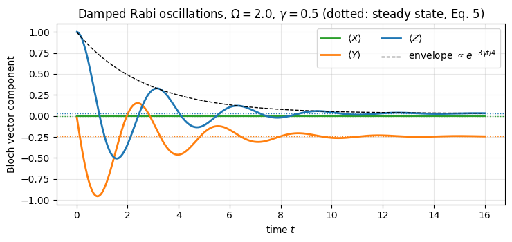
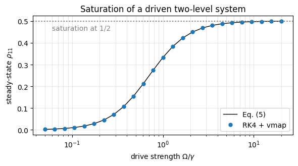
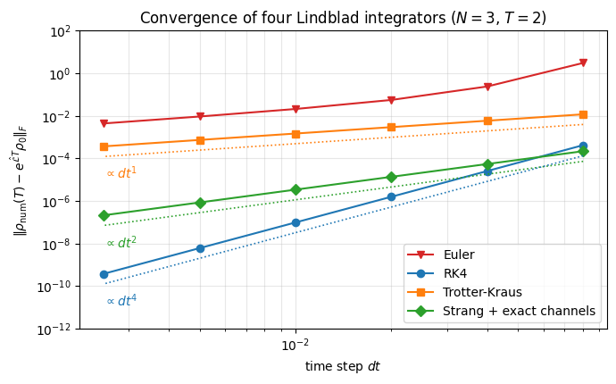
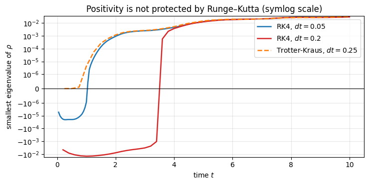
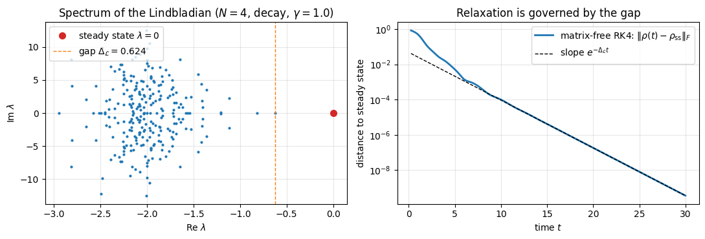
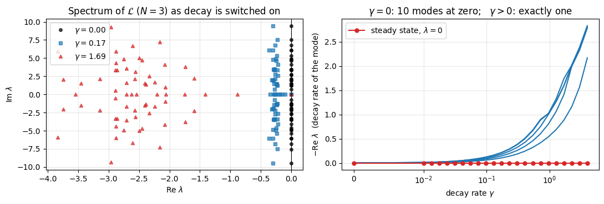

Quantum Many-Body Simulation — Chapter 6 — Open quantum systems
1. Introduction and motivation
Every notebook so far has solved the Schrödinger equation \(i\,\partial_t|\psi\rangle = H|\psi\rangle\): the spin chain was closed, perfectly isolated from the rest of the universe. No laboratory system is like that. An atom in an excited state emits a photon and the photon flies away; the phase of a superconducting qubit is scrambled by fluctuating charges in the substrate; a Rydberg atom decays spontaneously to lower levels; a trapped ion feels noisy electric fields. In all these cases the system we care about (a few spins) talks to an environment with an astronomically large number of degrees of freedom that we can neither control nor simulate.
Two things happen to such an open quantum system:
dissipation — energy (or particles) leaks into the environment: populations relax, on a time scale called \(T_1\);
decoherence — superpositions lose their definite phase: interference disappears, on a time scale called \(T_2\).
\(T_1\) and \(T_2\) are the two numbers every quantum-hardware paper quotes first, because they limit how long a quantum computation, a quantum memory or a quantum sensor can work. But dissipation is not only an enemy. Driven-dissipative systems relax to steady states that can be magnetically ordered, entangled, or even topological; optical pumping is engineered dissipation: it prepares atoms in a chosen internal state. Understanding (and simulating) open many-body systems is an active research field.
The state of an open system is not a vector \(|\psi\rangle\) but a density matrix\(\rho\) (introduced in notebook 07 (Chapter 3)), and the Schrödinger equation is replaced by the Lindblad master equation, also called the GKSL equation after Gorini, Kossakowski, Sudarshan and Lindblad (1976):
This notebook is about this equation: where it comes from, what each term means, and — the main subject here — how to solve it numerically for many spins without ever building a big matrix.
Road map.
Section 2 motivates the equation: starting from the Kraus channels of notebook 07 we build the most general memoryless, physically consistent evolution, name the approximations a real bath must satisfy, quote the GKSL theorem (nothing else is possible) and show which parts of \((H,\{L_j\})\) are convention rather than physics.
Section 3 solves one qubit by hand (\(T_1\) decay, \(T_2\) dephasing, the driven-dissipative steady state and damped Rabi oscillations) and checks a first, literal implementation against these formulas.
Section 4 is the core: \(\rho\) becomes a tensor of rank \(2N\) and the products \(O\rho\), \(\rho\,O\), \(L\rho L^\dagger\) become single einsum contractions — the left/right multiplication trick. We validate the matrix-free Lindbladian against two independent dense references.
Sections 5–7 are about time stepping: Euler (fails), Runge–Kutta 4 with lax.scan, the Trotter–Kraus step, their measured convergence orders (1, 4, 1 and — with a small improvement — 2), and what each method does to the three defining properties of a density matrix: trace, Hermiticity, positivity.
Section 8 is physics: a dissipative XXZ chain, driven to the maximally mixed state by dephasing, a structured steady state under decay, the spectrum of the Lindbladian and the relaxation gap.
Section 9 measures the cost, \(O(4^N)\), and explains why the next notebook (quantum trajectories) exists.
What you will learn
Physics
what the terms of the Lindblad equation mean; the Born, Markov and secular approximations behind them; jump operators for decay (\(\sigma^+=\vert0\rangle\langle1\vert\)), pumping (\(\sigma^-=\vert1\rangle\langle0\vert\)), dephasing (\(\sigma^z\)) and bit flips (\(\sigma^x\)), and the freedom in choosing them;
\(T_1\), \(T_2\) and the relation \(1/T_2 = 1/(2T_1) + 1/T_\varphi\); optical Bloch equations, saturation, damped Rabi oscillations;
the maximally mixed state versus structured steady states in a dissipative spin chain; purity and entropy production; the Liouvillian gap.
Numerical methods
the Lindbladian as a linear map on \(4^N\) numbers, applied matrix-free at cost \(O(N\,4^N)\) per evaluation;
explicit Runge–Kutta integration (order, stability limit) versus a completely positive operator splitting (Trotter–Kraus);
how to measure convergence orders and how to monitor trace / Hermiticity / positivity.
Implementation practice
reuse of apply_gate on ket and bra axes; building einsum strings by hand for a small case before trusting the general code;
lax.scan for time loops with recorded observables, lax.fori_loop with a traced trip count for parameter studies without recompilation, vmap over a drive strength;
validation against analytic results and against a dense superoperator on small \(N\); timing with compilation separated from execution.
Units: \(\hbar = 1\) everywhere; energies and rates are measured in units of the exchange coupling \(J\), times in units of \(1/J\).
Configuration
Every notebook of this course starts with the same cell. Choose where to run (DEVICE) and the floating-point precision (PRECISION): "double" = float64/complex128 (default, recommended for physics), "single" = float32/complex64 (half the memory, faster on consumer GPUs, but watch the round-off). All code below derives its dtypes from RDTYPE/CDTYPE and its check tolerances from TOL, so nothing else needs to change.
Code
# ==============================================================================# CONFIGURATION -- adapt to your hardware, then run the notebook top to bottom# ==============================================================================DEVICE ="auto"# "auto": use a GPU if JAX finds one, else CPU | "cpu" | "gpu"PRECISION ="double"# "double": float64/complex128 | "single": float32/complex64import osif DEVICE =="cpu": os.environ["JAX_PLATFORMS"] ="cpu"# must be set BEFORE jax is importedimport stringfrom functools import partialimport mathimport numpy as npimport jaximport jax.numpy as jnpfrom jax import lax# Precision is configurable: "double" = float64/complex128 (default; needed for long time evolutions and# tight validation), "single" = float32/complex64 (half the memory, faster on consumer GPUs).# In a notebook PRECISION is defined in the Configuration cell; for this module use the env var QE_PRECISION.PRECISION =globals().get("PRECISION", os.environ.get("QE_PRECISION", "double"))jax.config.update("jax_enable_x64", PRECISION =="double")RDTYPE = jnp.float64 if PRECISION =="double"else jnp.float32 # real dtypeCDTYPE = jnp.complex128 if PRECISION =="double"else jnp.complex64 # complex dtype of all states/operatorsTOL =1e-10if PRECISION =="double"else1e-4# tolerance for sanity checks (asserts)_LETTERS = string.ascii_letters # the 52 einsum index labels a-z, A-Zimport timeimport matplotlib.pyplot as pltif DEVICE =="gpu"and jax.default_backend() =="cpu":print("WARNING: DEVICE='gpu' requested but JAX found no GPU -- running on CPU.")print(f"JAX {jax.__version__} | backend: {jax.default_backend()} | devices: {jax.devices()}")print(f"precision: {PRECISION} -> real {RDTYPE.__name__}, complex {CDTYPE.__name__}, check tolerance TOL={TOL:g}")
JAX 0.11.0 | backend: cpu | devices: [CpuDevice(id=0)]
precision: double -> real float64, complex complex128, check tolerance TOL=1e-10
Engine recap — the simulator primitives used in this notebook (click to expand)
# ==============================================================================# ENGINE RECAP: the functions of quantum_engine.py (SmoQ.jax) used in this notebook.# Each one is derived, with its mathematics and an independent check, in notebook 08b# (Chapter 3), 'Building the quantum simulator engine'.# States are rank-N tensors of shape (2,)*N; every operator acts through ONE einsum.# ==============================================================================# ----------------------------------------------------------------------------# 1. Elementary matrices: Paulis, Clifford generators, rotations# ----------------------------------------------------------------------------I2 = jnp.eye(2, dtype=CDTYPE)X = jnp.array([[0, 1], [1, 0]], dtype=CDTYPE)Y = jnp.array([[0, -1j], [1j, 0]], dtype=CDTYPE)Z = jnp.array([[1, 0], [0, -1]], dtype=CDTYPE)SP = jnp.array([[0, 1], [0, 0]], dtype=CDTYPE) # sigma^+ = |0><1| = (X + iY)/2 : spin raising |1> -> |0>, the decay jump operatorSM = SP.conj().T # sigma^- = |1><0| = (X - iY)/2 : spin lowering |0> -> |1>XX = jnp.kron(X, X)YY = jnp.kron(Y, Y)ZZ = jnp.kron(Z, Z)# ----------------------------------------------------------------------------# 2. THE core primitive: a k-qubit operator acting on a tensor through ONE einsum# ----------------------------------------------------------------------------def apply_gate(psi, U, qubits):"""Apply a k-qubit operator U to the axes `qubits` of the tensor `psi`. MATH ---- One qubit (k=1), target q: psi'[s_0,..,a,..,s_{N-1}] = sum_b U[a,b] psi[s_0,..,b,..,s_{N-1}] Two qubits (k=2), targets (q1,q2); the 4x4 matrix is reshaped to U[a1,a2,b1,b2]: psi'[.., a1, .., a2, ..] = sum_{b1,b2} U[a1,a2,b1,b2] psi[.., b1, .., b2, ..] This IS the action of (1 x .. x U x .. x 1) -- written without ever building it. EINSUM TRANSLATION (generated automatically below) ------------------ N=3, q=1 : "db,abc->adc" d = new (output) index of qubit 1 N=4, q=(1,3) : "efbd,abcd->aecf" e,f = new indices of qubits 1 and 3 Recipe: label the axes of psi with letters a,b,c,...; give every target qubit a NEW letter (the next unused ones); U carries (new letters)+(old letters of the targets); the output is psi's labels with the target letters replaced by the new ones. IMPLEMENTATION NOTES -------------------- * reshape of U: (2^k,2^k) -> (2,)*2k. Row index = (a1..ak), column = (b1..bk), and the FIRST qubit in `qubits` is the most significant bit of the small matrix, i.e. it corresponds to the LEFT factor of kron(A,B). * `qubits` may be any distinct axes in any order: non-neighbouring gates cost the same. * U need not be unitary: projectors, Kraus operators and Hamiltonian terms reuse this. * psi may be ANY tensor with those axes of size 2: a state (rank N), a density tensor (rank 2N: ket axes 0..N-1, bra axes N..2N-1), ... COST O(2^k * 2^N) operations, O(2^N) memory (dense matrix: O(4^N) both). JAX `qubits` must be static Python ints (they define the einsum string); psi and U are traced, so the function can sit inside jit / grad / vmap / scan. """ qubits =tuple(int(q) for q in qubits) k, n =len(qubits), psi.ndim U = jnp.asarray(U, dtype=psi.dtype).reshape((2,) * (2* k)) # matrix -> rank-2k tensor inp =list(_LETTERS[:n]) # labels of psi's axes new = _LETTERS[n:n + k] # fresh labels for the outputs out = inp.copy()for a, q inzip(new, qubits): out[q] = a # target axes get the new labels sub =f"{''.join(new)}{''.join(inp[q] for q in qubits)},{''.join(inp)}->{''.join(out)}"return jnp.einsum(sub, U, psi)def apply_gate_dm(rho, U, qubits):"""Unitary on a density tensor: rho -> U rho U^dagger. MATH rho'[a..;a'..] = sum_{b,b'} U[a,b] rho[b..;b'..] U^*[a',b'] i.e. U acts on the KET axis q and the complex conjugate U^* on the BRA axis N+q. (A density matrix is "a state vector of 2N qubits": vectorisation |rho>> and U (x) U^* acting on it.) IMPLEMENTATION two calls of `apply_gate` -- the same einsum machinery, no new code. COST O(2^k 4^N). """ N = rho.ndim //2 rho = apply_gate(rho, U, qubits) # U on ket axesreturn apply_gate(rho, jnp.conj(jnp.asarray(U)), [N + q for q in qubits]) # U^* on bra axesdef apply_kraus_dm(rho, kraus, qubits):"""Quantum channel in Kraus form: rho -> sum_m K_m rho K_m^dagger, sum_m K_m^dag K_m = 1. EINSUM TRANSLATION (N=2, channel on qubit 0; g = Kraus index, summed!) "gea,gfc,abcd->ebfd" with operands K, K^*, rho [a=ket0, b=ket1, c=bra0, d=bra1; e, f = new ket0, bra0] All Kraus branches are summed INSIDE one einsum -- no Python loop over m. `kraus` has shape (M, 2^k, 2^k). """ qubits =tuple(int(q) for q in qubits) k, N =len(qubits), rho.ndim //2 K = jnp.asarray(kraus, dtype=rho.dtype).reshape((-1,) + (2,) * (2* k)) n = rho.ndim inp =list(_LETTERS[:n]) new_k, new_b, m = _LETTERS[n:n + k], _LETTERS[n + k:n +2* k], _LETTERS[n +2* k] out = inp.copy()for a, b, q inzip(new_k, new_b, qubits): out[q], out[N + q] = a, b ket_old ="".join(inp[q] for q in qubits) bra_old ="".join(inp[N + q] for q in qubits) sub =f"{m}{new_k}{ket_old},{m}{new_b}{bra_old},{''.join(inp)}->{''.join(out)}"return jnp.einsum(sub, K, jnp.conj(K), rho)# ----------------------------------------------------------------------------# 3. State preparation# ----------------------------------------------------------------------------def zero_state(N):"""|00...0>: a rank-N tensor of zeros with a single 1 at index (0,0,...,0). JAX arrays are immutable: `.at[idx].set(v)` returns an updated COPY (functional style)."""return jnp.zeros((2,) * N, dtype=CDTYPE).at[(0,) * N].set(1.0)_KETS = {"0": [1, 0], "1": [0, 1], "+": [1, 1], "-": [1, -1], "r": [1, 1j], "l": [1, -1j]}def product_state(spec):"""Product state from a string, one character per qubit: product_state('01+-') = |0>|1>|+>|->. ('r','l' = the +1/-1 eigenstates of Y.) MATH psi[s_0,...,s_{N-1}] = v0[s_0] v1[s_1] ... v_{N-1}[s_{N-1}] EINSUM an outer product = einsum with NO summed index: "a,b,c->abc". A product state needs only 2N numbers; entanglement is what makes all 2^N necessary. """ vecs = [jnp.array(_KETS[c], dtype=CDTYPE) / jnp.linalg.norm(jnp.array(_KETS[c], dtype=CDTYPE))for c in spec] n =len(vecs) sub =",".join(_LETTERS[i] for i inrange(n)) +"->"+ _LETTERS[:n]return jnp.einsum(sub, *vecs)def haar_state(key, N):"""Haar-random pure state: a complex Gaussian vector, normalised. (The Gaussian measure is unitarily invariant, so the direction is uniformly distributed.) `key` is an explicit JAX PRNG key -- same key, same state: reproducible science.""" k1, k2 = jax.random.split(key) v = jax.random.normal(k1, (2,) * N) +1j* jax.random.normal(k2, (2,) * N)return (v / jnp.linalg.norm(v)).astype(CDTYPE)def to_dm(psi):"""Pure state -> density TENSOR rho[s..; s'..] = psi[s..] psi^*[s'..] (rank 2N). An outer product: einsum "ab,AB->abAB" -- here via the equivalent tensordot(axes=0)."""return jnp.tensordot(psi, jnp.conj(psi), axes=0)def dm_matrix(rho):"""View a rank-2N density tensor as an ordinary 2^N x 2^N matrix (a reshape, no copy of meaning).""" d =int(round(np.sqrt(rho.size)))return rho.reshape(d, d)# ----------------------------------------------------------------------------# 4. Reduced density matrices & observables (matrix-free)# ----------------------------------------------------------------------------def rdm_dm(rho, keep):"""Partial trace of a density TENSOR (rank 2N), keeping the qubits `keep`. MATH rho_A[a,a'] = sum_b rho[a,b ; a',b] EINSUM N=2, keep=(0,): "abAb->aA" -- the letter b is REPEATED inside one operand and absent from the output: that is a trace over that pair of axes. """ keep =tuple(int(q) for q in keep) N = rho.ndim //2 ket =list(_LETTERS[:N]) bra = [(_LETTERS[N + q] if q in keep else ket[q]) for q inrange(N)] sub =f"{''.join(ket)}{''.join(bra)}->{''.join(ket[q] for q in keep)}{''.join(bra[q] for q in keep)}"return jnp.einsum(sub, rho).reshape(2**len(keep), 2**len(keep))def expect_local_dm(rho, O, qubits):"""Tr(rho O_qubits) for a density tensor, via its reduced density matrix."""return jnp.real(jnp.trace(rdm_dm(rho, qubits) @ jnp.asarray(O, dtype=CDTYPE)))# ----------------------------------------------------------------------------# 5. State characteristics: entropies, fidelity, negativity# ----------------------------------------------------------------------------def purity(rho_mat):"""Tr(rho^2): 1 for pure states, 1/d for the maximally mixed state in dimension d."""return jnp.real(jnp.trace(rho_mat @ rho_mat))def von_neumann_entropy(rho_mat, base=2.0):"""S(rho) = -Tr(rho log rho) = -sum_i lambda_i log lambda_i (in bits for base=2). Eigenvalues are clipped at 1e-16 because 0*log(0) := 0 but log(0) = -inf numerically.""" lam = jnp.clip(jnp.linalg.eigvalsh(rho_mat), 1e-16, None)return-jnp.sum(lam * jnp.log(lam)) / jnp.log(base)def _sqrtm_psd(A):"""Square root of a positive semi-definite matrix via eigendecomposition: V sqrt(w) V^dag.""" w, v = jnp.linalg.eigh(A)return (v * jnp.sqrt(jnp.clip(w, 0, None))) @ v.conj().T# ----------------------------------------------------------------------------# 7. Noise channels (Kraus operators): density matrix and quantum-trajectory forms# ----------------------------------------------------------------------------def kraus_dephasing(p):"""Dephasing (phase-flip) channel rho -> (1-p) rho + p Z rho Z : coherences rho_01 -> (1-2p) rho_01."""return jnp.stack([jnp.sqrt(1- p) * I2, jnp.sqrt(p) * Z])def kraus_amplitude_damping(g):"""Amplitude damping (T1 decay |1> -> |0> with probability g): K0 = [[1,0],[0,sqrt(1-g)]] (no decay -- but the amplitude of |1> shrinks: 'no click' is information) K1 = [[0,sqrt(g)],[0,0]] (decay event = sqrt(g) |0><1| = sqrt(g) sigma^+, engine SP).""" K0 = jnp.array([[1, 0], [0, jnp.sqrt(1- g)]], dtype=CDTYPE) K1 = jnp.array([[0, jnp.sqrt(g)], [0, 0]], dtype=CDTYPE)return jnp.stack([K0, K1])def kraus_from_jump(L, gamma_dt):"""Kraus pair generated by a Lindblad jump operator L acting for a short time dt (rate gamma): K1 = sqrt(gamma dt) L 'a jump happened' K0 = sqrt(1 - gamma dt L^dag L) 'no jump' (~ exp(-gamma dt L^dag L / 2)) Completeness K0^dag K0 + K1^dag K1 = 1 holds EXACTLY whenever gamma dt ||L^dag L|| <= 1, so that 1 - gamma dt L^dag L is positive semidefinite and its square root exists; the map is then trace preserving. For larger steps the negative eigenvalues are clipped by _sqrtm_psd and completeness FAILS (decay L = |0><1| = SP, gamma dt = 1.5: error 0.5). It reproduces the Lindblad dissipator up to O(dt^2).""" L = jnp.asarray(L, dtype=CDTYPE) K0 = _sqrtm_psd(jnp.eye(L.shape[0], dtype=CDTYPE) - gamma_dt * (L.conj().T @ L))return jnp.stack([K0, jnp.sqrt(gamma_dt) * L])# ----------------------------------------------------------------------------# 8. Hamiltonians as lists of local terms; H|psi> matrix-free# ----------------------------------------------------------------------------def heisenberg_terms(N, Jxx=1.0, Jyy=1.0, Jzz=1.0, hx=0.0, hy=0.0, hz=0.0, periodic=False, bonds=None):"""Spin-1/2 Hamiltonian in Pauli convention H = sum_<ij> (Jxx X_i X_j + Jyy Y_i Y_j + Jzz Z_i Z_j) + sum_i (hx X_i + hy Y_i + hz Z_i) returned as a LIST of local terms [(qubits, small_matrix), ...] -- this list *is* our Hamiltonian. Heisenberg: Jxx=Jyy=Jzz XXZ: Jxx=Jyy!=Jzz XY: Jzz=0 TFIM: only Jzz and hx. `bonds` overrides the default open chain (any graph: ladders, 2D lattices, all-to-all, ...)."""if bonds isNone: bonds = [(i, i +1) for i inrange(N -1)] + ([(N -1, 0)] if periodic and N >2else []) terms = [((i, j), Jxx * XX + Jyy * YY + Jzz * ZZ) for (i, j) in bonds]if hx !=0or hy !=0or hz !=0: terms += [((i,), hx * X + hy * Y + hz * Z) for i inrange(N)]return termsdef apply_hamiltonian(terms, psi):"""H|psi> = sum_k h_k|psi>, every term applied with `apply_gate` (h_k is Hermitian, not unitary -- the einsum does not care). Cost O(#terms * 2^N). This matrix-vector product is ALL that Lanczos, Chebyshev and Krylov methods need, which is why they scale to N ~ 25-30.""" out = jnp.zeros_like(psi)for qubits, h in terms: out = out + apply_gate(psi, h, qubits)return outdef dense_hamiltonian(terms, N):"""Dense 2^N x 2^N matrix for VALIDATION on small N -- built from the matrix-free action: column j of H is H|e_j>. `jax.vmap` applies H to all basis vectors at once.""" eye = jnp.eye(2** N, dtype=CDTYPE).reshape((2** N,) + (2,) * N) cols = jax.vmap(lambda e: apply_hamiltonian(terms, e).reshape(-1))(eye)return cols.T# ----------------------------------------------------------------------------# 9. Time evolution: TEBD / Trotter-Suzuki, Chebyshev, Krylov, exact# ----------------------------------------------------------------------------def _expm_herm(h, tau):"""exp(-i tau h) for a SMALL Hermitian matrix: h = V w V^dag => V exp(-i tau w) V^dag.""" w, v = jnp.linalg.eigh(jnp.asarray(h, dtype=CDTYPE))return (v * jnp.exp(-1j* tau * w)) @ v.conj().Tdef tebd_gates(terms, dt, order=2):"""Gate sequence of ONE Trotter-Suzuki (TEBD) step for H = sum_k h_k. MATH exp(-i H dt) cannot be split exactly because [h_k, h_l] != 0, but (BCH formula): order 1: prod_k e^{-i h_k dt} local error O(dt^2), global O(dt) order 2: prod_k e^{-i h_k dt/2} * prod_k(reversed) e^{-i h_k dt/2} local O(dt^3), global O(dt^2) order 4: S2(s dt)^2 S2((1-4s) dt) S2(s dt)^2, s = 1/(4 - 4^{1/3}) (Suzuki) global O(dt^4) Each factor is a 2x2 or 4x4 unitary -> applied by einsum; this is TEBD on a full state vector. Every order is exactly unitary: the norm is conserved to machine precision; the ERROR is in the phase /direction of the state, and it is controlled by dt. """if order ==1:return [(q, _expm_herm(h, dt)) for q, h in terms]if order ==2: half = [(q, _expm_herm(h, dt /2)) for q, h in terms]return half + half[::-1]if order ==4: s =1.0/ (4.0-4.0** (1.0/3.0)) seq = []for w in (s, s, 1-4* s, s, s): seq += tebd_gates(terms, w * dt, order=2)return seqraiseValueError("order must be 1, 2 or 4")def apply_gates_dm(rho, gates):"""Same circuit on a density tensor (U on kets, U^* on bras)."""for qubits, U in gates: rho = apply_gate_dm(rho, U, qubits)return rho# ----------------------------------------------------------------------------# 10. Open systems: Lindblad master equation (density tensor) and quantum trajectories (MCWF)# ----------------------------------------------------------------------------def lindblad_trotter_step_dm(rho, gates, jump_kraus):"""Trotterised Lindblad step on a density tensor: unitary TEBD gates, then one Kraus channel per jump operator (`jump_kraus` = [(qubits, kraus_from_jump(L, gamma*dt)), ...]). Completely positive and trace preserving by construction, first order in the dissipator.""" rho = apply_gates_dm(rho, gates)for q, K in jump_kraus: rho = apply_kraus_dm(rho, K, q)return rho
2. From closed to open systems: the GKSL equation
2.1 Why a density matrix, and what a physical evolution must respect
Recall from notebook 07 (Chapter 3): if the system S is entangled with an environment E, there is no state vector for S alone. All predictions for measurements on S follow from the reduced density matrix \(\rho = \mathrm{Tr}_E\,|\Psi_{SE}\rangle\langle\Psi_{SE}|\), a matrix with three defining properties:
property
formula
meaning
Hermitian
\(\rho^\dagger=\rho\)
probabilities are real
unit trace
\(\mathrm{Tr}\,\rho = 1\)
probabilities sum to one
positive semi-definite
all eigenvalues \(p_k\ge 0\)
probabilities are non-negative
The expectation value of an observable is \(\langle O\rangle = \mathrm{Tr}(\rho\,O)\), the purity \(\mathrm{Tr}\rho^2\) equals 1 only for pure states \(\rho=|\psi\rangle\langle\psi|\).
2.1b Tracing out the environment, exactly
Before any approximation, ask what the evolution of \(\rho\) looks like in general. Two ingredients are needed.
(i) An uncorrelated preparation. Assume system and environment start independently, \(\rho_{\rm tot}(0)=\rho(0)\otimes\rho_E\), with the environment in a fixed reference state (thermal, or its ground state at zero temperature). This is a real restriction: if the two start correlated, the later state of the system depends on correlations that \(\rho(0)\) does not record, and then no function of \(\rho(0)\) alone can produce \(\rho(t)\). Example with one environment qubit: the product state \(\tfrac{\mathbb 1}2\otimes\tfrac{\mathbb 1}2\) and the Bell state \((|00\rangle+|11\rangle)/\sqrt2\) have the same \(\rho(0)=\mathbb 1/2\) and the same environment state, but after a CNOT with the environment qubit as control the system holds \(\mathbb 1/2\) in the first case and \(|0\rangle\langle0|\) in the second.
(ii) A partial trace in the environment’s own eigenbasis. Evolve the pair unitarily and trace out the environment, diagonalising the reference state as \(\rho_E=\sum_\nu\lambda_\nu|\phi_\nu\rangle\langle\phi_\nu|\):
Each \(M_{\mu\nu}\) acts on the system alone - it is what is left of the joint propagator once the environment bra and ket have been contracted, the same kind of contraction as the partial trace of notebook 06 (Chapter 3). Absorbing \(\sqrt{\lambda_\nu}\) and writing a single label \(k\),
where the second identity follows from \(U^\dagger U=\mathbb{1}\) and completeness of the \(|\phi_\mu\rangle\), and is what makes \(\mathrm{Tr}\,\rho(t)=\mathrm{Tr}\,\rho(0)\) at all times. Equation (1) is exact: any coupling strength, any environment, no approximation. Its price is that the \(A_k\) are as unknowable as the environment. (In the language of notebook 07 this is the Kraus form of a quantum channel, with Kraus operators \(A_k\).)
The label \(k\) is a record. It says which state the environment was left in. Summing over it - not reading it - gives the master equation of this notebook. Reading it gives the quantum trajectories of notebook 17: the likeliest outcome leaves the system in \(A_0|\psi\rangle\), whose norm is less than one because learning that nothing happened is information, and a rare outcome leaves it in \(L_j|\psi\rangle\) - a click in a detector. The two methods are one derivation read two ways.
2.1c Where the jump operators come from
So far \(L_j\) is “whatever the small operators are”. They are not arbitrary. Any physical coupling is a sum of products of a system operator with an environment operator,
\[ V=\sum_\alpha S_\alpha\otimes E_\alpha , \]
because that is what “the two act on each other” means. Expand \(M_{\mu\nu}=\langle\phi_\mu|U|\phi_\nu\rangle\) for a short interval, \(U\simeq\mathbb{1}-iV\,dt\), and read off the piece with \(\mu\neq\nu\), i.e. the environment changing state:
The operator acting on the system is \(S_\alpha\) - the system operator that appears in the coupling - and the number multiplying it is the amplitude for the environment to make that transition. A jump operator is the system’s half of the interaction; its rate is the environment’s half, squared and summed over all the ways the environment can absorb what the system gives it. That sum is Fermi’s golden rule: the rate is the environment’s spectral density at the transition frequency.
Spin in the electromagnetic vacuum. We use \(\sigma^\pm=(\sigma^x\pm i\sigma^y)/2\), so that \(\sigma^-=|1\rangle\langle0|\) lowers spin up \(|0\rangle\) to spin down \(|1\rangle\) and \(\sigma^+=|0\rangle\langle1|\) raises it. With \(|1\rangle\) the excited level, \(V=g(\sigma^+\otimes a^\dagger+\sigma^-\otimes a)\). From the vacuum the only environment transition is “no photon \(\to\) one photon”, whose system partner is \(\sigma^+\), the de-excitation \(|1\rangle\to|0\rangle\). Hence \(L=\sigma^+\): spontaneous emission.
Thermal environment. The environment can also give a quantum back, so “one photon \(\to\) none” contributes with system partner \(\sigma^-\). Two jump operators, their rates in a ratio fixed by temperature.
Fluctuating field along \(z\).\(V=Z\otimes B\): the environment learns the spin direction and exchanges no energy. The system operator in the coupling is \(Z\), so \(L=Z\) - pure dephasing, populations untouched.
In a many-body system the same reading applies site by site: a bath on each spin gives one jump operator per site, which is the list used in Sec. 8.
2.2 Where a master equation comes from (the physical picture)
A microscopic derivation starts from the Schrödinger equation of system plus bath, \(H_{\rm tot} = H + H_E + H_{\rm int}\), and traces out the bath. Three approximations make the result tractable (we quote them without proof; see Breuer & Petruccione, chapter 3):
Born (weak coupling): the bath is so large that the system does not change it appreciably;
Markov (no memory): bath correlations decay much faster than the system evolves — whatever leaks into the bath never comes back. The photon emitted by an atom in free space is the prime example;
secular / rotating-wave: rapidly oscillating terms average out.
The outcome is a first-order differential equation \(\dot\rho = \mathcal{L}(\rho)\) in which the bath survives only through a handful of rates\(\gamma_j\) and jump operators\(L_j\) (the system operators through which the bath acts). We do not carry out this microscopic calculation. Instead we give a consistency argument: we postulate the form that a memoryless evolution must take and show that it forces Eq. (2) below. The argument explains where every term comes from and prepares the numerical methods, but it is not a derivation from \(H_{\rm tot}\): the rates \(\gamma_j\) and the operators \(L_j\) stay unspecified, and only the microscopic calculation (or an experiment) fixes them.
2.3 The most general memoryless evolution
Markov assumption: the state at \(t+dt\) depends only on the state at \(t\), through a channel (1) that is the same at all times and that becomes the identity for \(dt\to0\): \(\rho(t+dt) = \sum_m K_m\rho(t)K_m^\dagger = \rho(t) + O(dt)\).
How can a sum of terms \(K_m\rho K_m^\dagger\) differ from \(\rho\) only at order \(dt\)? We assume the Kraus operators organise themselves in the two ways one expects from a Taylor expansion in \(\sqrt{dt}\) (this assumption is the non-rigorous step; the theorem quoted at the end of this section is what removes it).
One Kraus operator is close to the identity: \(K_0 = \mathbb{1} + G\,dt\) with some matrix \(G\). Every matrix can be split into a Hermitian and an anti-Hermitian part, so we write \(G = -iH - A\) with \(H=H^\dagger\) and \(A=A^\dagger\).
All the others are small, of order \(\sqrt{dt}\), so that \(K\rho K^\dagger\) is of order \(dt\): \(K_j = \sqrt{\gamma_j\,dt}\;L_j\), \(j=1,2,\dots\) with arbitrary operators \(L_j\) and rates \(\gamma_j\ge0\).
Now impose the completeness relation of Eq. (1), keeping terms up to order \(dt\):
This is the GKSL (Lindblad) master equation. \(\mathcal{L}\) is called the Lindbladian or Liouvillian, \(\mathcal{D}[L]\) the dissipator of the jump operator \(L\).
GKSL theorem (Gorini, Kossakowski and Sudarshan; Lindblad; both 1976). Let \(\{e^{\mathcal{L}t}\}_{t\ge0}\) be a one-parameter semigroup — \(e^{\mathcal{L}(t+s)}=e^{\mathcal{L}t}e^{\mathcal{L}s}\), \(e^{\mathcal{L}0}=\mathrm{id}\) — of completely positive, trace-preserving (CPTP) maps, continuous in \(t\). On a finite-dimensional Hilbert space its generator \(\mathcal{L}\)must have the form (2), with \(H=H^\dagger\) and finitely many \(L_j\), \(\gamma_j\ge0\). Gorini, Kossakowski and Sudarshan proved it for \(N\)-level systems; Lindblad proved it in infinite dimension for generators that are bounded in operator norm.
The theorem is what turns Section 2.3 from a plausible ansatz into a statement about all memoryless evolutions: nothing else than (2) is possible. The three physical words in it are completely positive (defined in notebook 07 (Chapter 3): positivity must survive when the system is viewed as part of a larger one), trace preserving (probability), and semigroup (memorylessness: evolving for \(t+s\) is the same as evolving for \(t\) and then for \(s\), with no reference to what happened before). A bath with memory violates the last property, and then no Lindblad equation exists.
Reading the equation.
\(-i[H,\rho]\) — ordinary coherent dynamics (for \(\gamma_j=0\) and \(\rho=|\psi\rangle\langle\psi|\) this is the Schrödinger equation).
\(L\rho L^\dagger\) — the “jump” (or recycling) term: with probability \(\gamma\,dt\,\mathrm{Tr}(L^\dagger L\rho)\) per time step the environment does something to the system (absorbs a photon, flips a phase, …), and the state becomes \(\propto L\rho L^\dagger\).
\(-\tfrac12\{L^\dagger L,\rho\}\) — the price for probability conservation. It removes exactly as much trace as the jump term adds: \(\mathrm{Tr}\,\mathcal{D}[L](\rho) = \mathrm{Tr}(L^\dagger L\rho) - \mathrm{Tr}(L^\dagger L\rho) = 0\) by cyclicity of the trace. Together with \(H\) it forms the non-Hermitian effective Hamiltonian\(H_{\rm eff} = H - \tfrac i2\sum_j\gamma_jL_j^\dagger L_j\), which governs the next notebook.
2.4 The jump operators used in this notebook
Our basis convention: \(|0\rangle=(1,0)^T\) is the \(+1\) eigenstate of \(Z\) (“up”), \(|1\rangle=(0,1)^T\). For a single qubit we take \(|1\rangle\) as the excited level that decays to \(|0\rangle\), consistent with the amplitude-damping channel of notebook 07. Relaxation of \(|1\rangle\) to \(|0\rangle\) has the jump operator \(|0\rangle\langle1|=\sigma^+\) in our convention. Quantum-optics texts call the same operator \(\sigma^-=|g\rangle\langle e|\): they take \(\sigma^z=|e\rangle\langle e|-|g\rangle\langle g|\), which is \(-Z\) when the ground state is \(|0\rangle\).
name
\(L\)
engine
\(L^\dagger L\)
what the bath does
physical example
decay (relaxation)
\(\sigma^+ = \lvert0\rangle\langle1\rvert\)
SP
\(\lvert1\rangle\langle1\rvert\)
takes away one excitation
spontaneous emission
pumping
\(\sigma^- = \lvert1\rangle\langle0\rvert\)
SM
\(\lvert0\rangle\langle0\rvert\)
adds one excitation
incoherent (optical) pumping
dephasing
\(\sigma^z\)
Z
\(\mathbb{1}\)
measures \(Z\) without telling us
fluctuating magnetic field
bit flip
\(\sigma^x\)
X
\(\mathbb{1}\)
random spin flips
transverse noise
For many spins each site has its own, independent bath: \(L_j\) acts on site \(j\) only. Exactly like a Hamiltonian is a list of local terms [(qubits, h), ...], the dissipation is a list jumps = [(qubits, L, gamma), ...].
Physics insight. For a Hermitian jump operator with \(L^2=\mathbb 1\) (dephasing, bit flip) the dissipator is \(\mathcal D[L](\rho) = L\rho L - \rho\): the bath applies \(L\) at random times. Such noise is unital (\(\mathcal{L}(\mathbb 1)=0\)): the maximally mixed state \(\mathbb 1/2^N\) is always a steady state, and such noise can only make the state more mixed. Decay is different: \(\mathcal{D}[\sigma^+](\mathbb 1) = \sigma^+\sigma^- - \sigma^-\sigma^+ = Z \neq 0\). It pumps the system towards the pure state \(|0\rangle\): decay can purify.
2.5 The pair \((H, \{L_j\})\) is not unique
Two different-looking pairs \((H,\{L_j\})\) can generate the same\(\mathcal L\), exactly as two different Kraus sets can describe the same channel (the unitary freedom of notebook 07 (Chapter 3)). Absorb the rates into the jump operators, \(A_j := \sqrt{\gamma_j}\,L_j\), so that \(\mathcal L(\rho) = -i[H,\rho]+\sum_j\mathcal D[A_j](\rho)\). Then \(\mathcal L\) is unchanged under:
Mixing of the jump operators.\(A_j \mapsto \sum_k u_{jk}A_k\) with a unitary matrix \(u\). Indeed \(\sum_j\big(\sum_ku_{jk}A_k\big)\rho\big(\sum_lu_{jl}A_l\big)^\dagger = \sum_{kl}\big(\sum_ju_{jk}u_{jl}^*\big)A_k\rho A_l^\dagger = \sum_kA_k\rho A_k^\dagger\) because \(\sum_ju_{jk}u^*_{jl}=\delta_{kl}\), and the same cancellation happens in \(\sum_jA_j^\dagger A_j\). (As in notebook 07, \(u\) may be rectangular with zero-padding, which lets one add or remove jump operators that do nothing.)
Shifting a jump operator by a number.\(A_j\mapsto A_j+c_j\mathbb 1\) with \(c_j\in\mathbb C\), provided the Hamiltonian is shifted too: \(H \mapsto H - \tfrac{i}{2}\sum_j\big(c_j^*A_j - c_jA_j^\dagger\big)\), which is Hermitian, so it is a legitimate Hamiltonian. (Substituting \(A+c\) into \(\mathcal D\) and collecting the terms linear in \(c\) gives \(\tfrac12 c^*[A,\rho]-\tfrac12 c[A^\dagger,\rho]\), a commutator — exactly a Hamiltonian term.)
Shifting the Hamiltonian by a number, \(H\mapsto H+E_0\mathbb 1\): a commutator does not see it.
Consequences worth keeping in mind. “The” jump operator of a physical process is a choice, not an observable: only \(\mathcal L\) is. A jump operator proportional to the identity does nothing at all (take \(A=c\mathbb 1\) in rule 2 with \(A=0\)). And the split between “Hamiltonian” and “dissipator” is itself convention-dependent — rule 2 moves weight from one to the other. What is unique, once the \(A_j\) are chosen traceless and the constant is removed from \(H\), is the pair up to the unitary mixing of rule 1. The next notebook uses this freedom in reverse: different unravellings of the same\(\mathcal L\) give different quantum trajectories with identical averages.
3. One qubit: everything can be checked by hand
Before any many-body machinery we implement Eq. (2) literally, with ordinary \(2\times2\) matrices and the @ product, and test it on three textbook problems whose solutions we derive on paper. This literal implementation will later serve as an independent reference for the matrix-free code.
3.1 Analytic solution I: decay and dephasing (\(T_1\) and \(T_2\))
Write \(\rho = \begin{pmatrix}\rho_{00}&\rho_{01}\\ \rho_{10}&\rho_{11}\end{pmatrix}\), where \(\rho_{11}\) is the population of the excited level and \(\rho_{01}\) the coherence.
Decay, \(L=\sigma^+=|0\rangle\langle1|\), rate \(\gamma_1\). We need three small products: \(\sigma^+\rho\,\sigma^- = \rho_{11}|0\rangle\langle0|\), \(\;L^\dagger L = \sigma^-\sigma^+ = |1\rangle\langle1|\), and \(\tfrac12\{|1\rangle\langle1|,\rho\} = \begin{pmatrix}0&\rho_{01}/2\\ \rho_{10}/2&\rho_{11}\end{pmatrix}\). Hence
The population relaxes with the time constant \(T_1 = 1/\gamma_1\), and the coherence — inevitably — at half that rate.
Dephasing, \(L=\sigma^z\), rate \(\gamma_\varphi\): \(\;Z\rho Z - \rho = \begin{pmatrix}0&-2\rho_{01}\\-2\rho_{10}&0\end{pmatrix}\), so the populations do not move at all while \(\rho_{01}(t) = \rho_{01}(0)\,e^{-2\gamma_\varphi t}\). The pure-dephasing time is therefore \(T_\varphi = 1/(2\gamma_\varphi)\), not\(1/\gamma_\varphi\).
Common pitfall — the factor 2 in the dephasing rate. A rate is meaningless without the jump operator it belongs to, and the literature uses at least three conventions for the same physics. This notebook always uses \(L=\sigma^z\) with rate \(\gamma_\varphi\), so coherences decay as \(e^{-2\gamma_\varphi t}\). With the spin-1/2 operator \(L=\sigma^z/2\) the dissipator is divided by \(4\) and the coherence decays as \(e^{-\gamma_\varphi t/2}\); with the projector \(L=\lvert1\rangle\langle1\rvert\) (a bath that watches only the excited level) one finds \(e^{-\gamma_\varphi t/2}\) as well. Compare the quantum-channel language of notebook 07 (Chapter 3): the dephasing channel with parameter \(p\) sends \(\rho_{01}\mapsto(1-2p)\rho_{01}\), so dephasing for a time \(t\) in our convention is that channel with \(p = (1-e^{-2\gamma_\varphi t})/2\) — the expression used in exact_local_kraus in Section 6.1.
Both, plus a detuning\(H=-\tfrac{\delta}{2}Z\) (level \(|1\rangle\) lies \(\delta\) above \(|0\rangle\); this is the situation of a Ramsey experiment). The Hamiltonian contributes \(-i[H,\rho]_{01} = -i(E_0-E_1)\rho_{01} = +i\delta\,\rho_{01}\), therefore
The measurable signal is \(\langle X\rangle = 2\,\mathrm{Re}\,\rho_{01}\): an oscillation at the detuning \(\delta\) (Ramsey fringes) under the envelope \(e^{-t/T_2}\). \(T_2\le 2T_1\) always: relaxation alone already destroys coherence.
3.2 From formula to code: the literal Lindbladian and a generic RK4 integrator
lindblad_rhs_dense is Eq. (2) typed with @ — nothing to explain, and that is its value as a reference.
rk4_step(f, y, dt) is the classical fourth-order Runge–Kutta step for \(\dot y = f(y)\) (recalled in Section 5). It does not care whether y is a \(2\times2\) matrix or a rank-\(2N\) tensor.
integrate runs the time loop with lax.scan: the step function is compiled once and iterated inside XLA; the second output of the step (observe(y)) is stacked along a new leading time axis (see JAX from scratch).
Code
# ==============================================================================# STEP 1: the literal (dense) Lindbladian + a generic RK4/scan integrator# ==============================================================================def lindblad_rhs_dense(rho, H, Ls, gammas):"""Right-hand side of the GKSL equation with ORDINARY matrices (reference implementation). MATH d rho/dt = -i (H rho - rho H) + sum_j gamma_j ( L_j rho L_j^dag - (1/2)(L_j^dag L_j rho + rho L_j^dag L_j) ) COST O(d^3) per term for d x d matrices (d = 2^N): fine for one qubit and for validation, hopeless for many. """ out =-1j* (H @ rho - rho @ H)for L, g inzip(Ls, gammas): LdL = L.conj().T @ L out = out + g * (L @ rho @ L.conj().T -0.5* (LdL @ rho + rho @ LdL))return outdef rk4_step(f, y, dt):"""One classical Runge-Kutta-4 step for dy/dt = f(y): local error O(dt^5), global error O(dt^4). MATH k1 = f(y), k2 = f(y + dt/2 k1), k3 = f(y + dt/2 k2), k4 = f(y + dt k3) y(t+dt) = y + dt/6 (k1 + 2 k2 + 2 k3 + k4) """ k1 = f(y) k2 = f(y +0.5* dt * k1) k3 = f(y +0.5* dt * k2) k4 = f(y + dt * k3)return y + dt /6* (k1 +2* k2 +2* k3 + k4)def integrate(step, y0, n_steps, observe):"""Iterate y -> step(y) n_steps times and record observe(y) after every step. JAX lax.scan(body, carry, xs, length): `body` is traced and compiled ONCE; the loop runs inside XLA. Returns (y_final, observables stacked along a leading time axis of length n_steps). """def body(y, _): y = step(y)return y, observe(y)return lax.scan(body, y0, None, length=n_steps)def bloch_vector(rho):"""(<X>, <Y>, <Z>) = (Tr rho X, Tr rho Y, Tr rho Z) of a single-qubit density matrix."""return jnp.real(jnp.stack([jnp.trace(rho @ P) for P in (X, Y, Z)]))
3.3 Checkpoint: the Ramsey experiment with \(T_1\) and \(T_2\)
We start from the pure state \(|\psi_0\rangle=\cos\tfrac\theta2|0\rangle+\sin\tfrac\theta2|1\rangle\) with \(\theta = 2\pi/3\) (so that both the population \(\rho_{11}(0)=3/4\) and the coherence \(\rho_{01}(0)=\sqrt3/4\) are non-zero), switch on decay, dephasing and a detuning, and compare with Eq. (3).
Interpretation. The numerical populations and coherences agree with Eq. (3) to the accuracy of the integrator (the printed errors are of order \(10^{-9}\) or smaller). Left: the excited-state population decays exponentially with \(T_1=2\). Right: the coherence oscillates at the detuning and dies under the envelope \(e^{-t/T_2}\) with \(T_2\approx1.54 < 2T_1 = 4\), because dephasing adds to the unavoidable relaxation-induced loss of coherence. This is precisely how \(T_1\) and \(T_2\) of a real qubit are measured: prepare, wait, read out, fit an exponential.
Now drive the decaying qubit resonantly: \(H=\tfrac\Omega2 X\) (rotating frame, \(\Omega\) = Rabi frequency), \(L=\sigma^+\) with rate \(\gamma\). Parametrise \(\rho = \tfrac12(\mathbb 1 + xX+yY+zZ)\) with the Bloch vector \((x,y,z)=(\langle X\rangle,\langle Y\rangle,\langle Z\rangle)\), i.e. \(\rho_{11} = (1-z)/2\) and \(\rho_{01} = (x-iy)/2\).
Drive.\(-i[\tfrac\Omega2X,\rho]\) rotates the Bloch vector about the \(x\) axis: \(\dot{\vec r} = \Omega\,\hat x\times\vec r\), i.e. \(\dot y = -\Omega z\), \(\dot z = +\Omega y\).
Decay. From Section 3.1: \(\dot\rho_{11}=-\gamma\rho_{11}\) gives \(\dot z = -2\dot\rho_{11} = \gamma(1-z)\), and \(\dot\rho_{01} = -\tfrac\gamma2\rho_{01}\) gives \(\dot x=-\tfrac\gamma2x\), \(\dot y = -\tfrac\gamma2 y\).
Together, the optical Bloch equations
\[ \dot x = -\tfrac\gamma2 x,\qquad \dot y = -\Omega z-\tfrac\gamma2 y,\qquad \dot z = \Omega y+\gamma(1-z). \tag{4}\]
Steady state (\(\dot x=\dot y=\dot z=0\)): \(y=-2\Omega z/\gamma\) inserted into the last equation gives
However hard we drive, the excited-state population never exceeds \(1/2\) (saturation): drive and decay balance in a mixed state. Transient: the \((y,z)\) block of Eq. (4) has the eigenvalues \(\lambda_\pm = -\tfrac34\gamma\pm\sqrt{\gamma^2/16-\Omega^2}\). For \(\Omega>\gamma/4\) these are complex: damped Rabi oscillations at frequency \(\sqrt{\Omega^2-\gamma^2/16}\) with damping rate \(\tfrac34\gamma\).
Because Eq. (4) is a linear ODE \(\dot{\vec r} = M\vec r + \vec b\), its exact solution is \(\vec r(t) = \vec r_{\rm ss} + e^{Mt}(\vec r(0)-\vec r_{\rm ss})\), which we evaluate with a \(3\times3\) matrix exponential as reference for the whole time trace.
steady state, Eq. (5): (x, y, z) = (+0.000000, -0.242424, +0.030303)
RK4 at t = 16: (x, y, z) = (+0.000000, -0.243084, +0.032612)
max over all times |Bloch vector (RK4) - exact solution of Eq. (4)| = 2.79e-09

Interpretation. The qubit starts in \(|0\rangle\) (\(z=1\)), the drive rotates the Bloch vector in the \(y\)–\(z\) plane, and the decay damps the rotation with the predicted rate \(\tfrac34\gamma\) until the vector comes to rest at the steady state of Eq. (5), inside the Bloch ball: \(|\vec r_{\rm ss}|<1\) means a mixed state. The RK4 trace agrees with the exact solution of the Bloch equations to \(\sim10^{-9}\) at all times.
3.5 A parameter sweep with vmap: the saturation curve
jax.vmap turns a function written for one value of \(\Omega\) into a function of a whole array of values, executed as one batched computation. We integrate to \(t=30/\gamma\) (many relaxation times) and compare the final excited-state population with Eq. (5).
Code
# ==============================================================================# Saturation curve: steady-state excited population versus drive strength (vmap over Omega)# ==============================================================================def excited_population_at_late_time(Om, gamma=gamma_d, dt=0.01, n_steps=6000):"""Integrate the driven, decaying qubit to t = n_steps*dt and return rho_11 = (1 - <Z>)/2.""" f =lambda r: lindblad_rhs_dense(r, 0.5* Om * X, [SP], [gamma]) rho, _ = integrate(lambda y: rk4_step(f, y, dt), rho_start, n_steps, lambda y: 0.0)return jnp.real(rho[1, 1])Omegas = jnp.asarray(np.geomspace(0.05, 20.0, 25) * gamma_d, dtype=RDTYPE)p1_num = jax.jit(jax.vmap(excited_population_at_late_time))(Omegas) # 25 integrations in ONE compiled callp1_ana = Omegas **2/ (gamma_d **2+2* Omegas **2)err_sat =float(jnp.max(jnp.abs(p1_num - p1_ana)))print(f"max |rho_11(steady) - Omega^2/(gamma^2 + 2 Omega^2)| over the sweep = {err_sat:.2e}")assert err_sat <1e-6fig, ax = plt.subplots(figsize=(6, 3.4))ax.semilogx(Omegas / gamma_d, p1_ana, "k-", lw=1, label="Eq. (5)")ax.semilogx(Omegas / gamma_d, p1_num, "o", ms=5, label="RK4 + vmap")ax.axhline(0.5, color="gray", ls=":"); ax.text(0.06, 0.46, "saturation at 1/2", color="gray")ax.set_xlabel(r"drive strength $\Omega/\gamma$"); ax.set_ylabel(r"steady-state $\rho_{11}$")ax.set_title("Saturation of a driven two-level system"); ax.legend(); ax.grid(alpha=.3, which="both")plt.tight_layout(); plt.show()
max |rho_11(steady) - Omega^2/(gamma^2 + 2 Omega^2)| over the sweep = 3.74e-09

Interpretation. Weak drive (\(\Omega\ll\gamma\)): \(\rho_{11}\approx(\Omega/\gamma)^2\), the qubit hardly leaves \(|0\rangle\). Strong drive: the population saturates at \(1/2\) — the reason why an incoherently broadened two-level system can never be inverted by a continuous resonant drive (and why lasers need three or four levels). The remaining deviation (\(4\times10^{-9}\)) is dominated by the finite integration time, not by RK4.
Numerical practice. We now have a Lindblad solver that passes three analytic tests. It is dense: for \(N\) spins H @ rho costs \(O(8^N)\). It will survive in this notebook only as a reference for \(N\le4\).
4. The matrix-free Lindbladian on the density tensor
4.1 The density tensor (recap)
For \(N\) spins, \(\rho\) is a \(2^N\times2^N\) matrix. As in notebook 07 (Chapter 3) we store it as a tensor of rank \(2N\)
which is nothing but rho_matrix.reshape((2,)*(2*N)); dm_matrix(rho) goes back. Spin \(q\) owns two axes: its ket axis q and its bra axis N+q.
4.2 The left/right multiplication trick
The Lindbladian (2) contains three kinds of products with a local operator \(O\) (acting on site \(q\), identity elsewhere). Let us write them with indices; to keep the formulas short, suppress all spectator indices and write \(\rho_{ab}\) with \(a\) = ket index and \(b\) = bra index of site \(q\).
Left multiplication acts on the ket index:
\[ (O\rho)_{ab} = \sum_c O_{ac}\,\rho_{cb}. \]
This is literally the formula of a gate acting on a state vector — apply_gate(rho, O, [q]).
Right multiplication acts on the bra index, but with the roles of row and column exchanged:
Read the last expression as “the matrix \(O^T\) acts on the bra index”: apply_gate(rho, O.T, [N+q]). It is the transpose, not the Hermitian conjugate — no complex conjugation appears, because we only re-ordered indices.
Sandwich\(L\rho L^\dagger\): left-multiply by \(L\), right-multiply by \(L^\dagger\), whose transpose is \((L^\dagger)^T = L^*\):
apply_gate(apply_gate(rho, L, [q]), L.conj(), [N+q]) — the same rule as “\(U\) on kets, \(U^*\) on bras” for unitary gates.
product
acts on
with matrix
einsum for \(N=2\), site \(q=0\) (axes a b ; c d = ket0 ket1 ; bra0 bra1)
\(O\rho\)
ket axis \(q\)
\(O\)
"ea,abcd->ebcd"
\(\rho\,O\)
bra axis \(N+q\)
\(O^T\)
"ec,abcd->abed"
\(L\rho L^\dagger\)
both
\(L\) and \(L^*\)
"ea,fc,abcd->ebfd"
Each contraction touches every element of \(\rho\) once and multiplies by a \(2\times2\) matrix: cost \(O(2\cdot4^N)\), memory \(O(4^N)\), compared with \(O(8^N)\) for H @ rho with a dense \(2^N\times2^N\) Hamiltonian. Two-site terms (the bonds of \(H\)) work the same way with a \(4\times4\) matrix reshaped to \((2,2,2,2)\) acting on the axes \((q_1,q_2)\) or \((N+q_1,N+q_2)\).
4.3 By hand for two qubits
We verify the three strings of the table against ordinary matrix algebra with kron, and check that apply_gate produces the same numbers.
Code
# ==============================================================================# STEP 2: left / right multiplication and the sandwich as einsums -- by hand, N = 2, site q = 0# ==============================================================================N2 =2key = jax.random.PRNGKey(2024)k_a, k_b, k_op = jax.random.split(key, 3)# a generic MIXED test state: 0.6 |a><a| + 0.4 |b><b| with Haar-random |a>, |b>rho_test =0.6* to_dm(haar_state(k_a, N2)) +0.4* to_dm(haar_state(k_b, N2)) # shape (2,2,2,2)O = jax.random.normal(k_op, (2, 2)) +1j* jax.random.normal(jax.random.split(k_op)[0], (2, 2)) # generic, NOT HermitianO = O.astype(CDTYPE)R = dm_matrix(rho_test) # 4 x 4 matrix viewO_full = jnp.kron(O, jnp.eye(2, dtype=CDTYPE)) # O on site 0 (left kron factor), identity on site 1left = jnp.einsum("ea,abcd->ebcd", O, rho_test) # O rho : O on ket axis 0right = jnp.einsum("ec,abcd->abed", O.T, rho_test) # rho O : O^T on bra axis 2 = N+0sandwich = jnp.einsum("ea,fc,abcd->ebfd", O, O.conj(), rho_test) # O rho O^dag : O on ket, O^* on brachecks = {"O rho (by-hand einsum)": (left, O_full @ R),"rho O (by-hand einsum)": (right, R @ O_full),"O rho O^dag (by-hand einsum)": (sandwich, O_full @ R @ O_full.conj().T),"O rho (apply_gate, ket axis)": (apply_gate(rho_test, O, [0]), O_full @ R),"rho O (apply_gate, bra axis, O^T)": (apply_gate(rho_test, O.T, [N2 +0]), R @ O_full),}for name, (a, b) in checks.items(): err =float(jnp.max(jnp.abs(dm_matrix(a) - b)))print(f"{name:45s} max error = {err:.1e}")assert err < TOL# the classic mistakes: using O^dagger or O^* instead of O^T on the bra axis.# These lines are checkpoints too -- they assert that the wrong choice FAILS loudly, which is only# guaranteed because O is neither symmetric nor real.for label, Ow in [("O^dagger", O.conj().T), ("O^*", O.conj()), ("O (no transpose)", O)]: err_w =float(jnp.max(jnp.abs(dm_matrix(apply_gate(rho_test, Ow, [N2 +0])) - R @ O_full)))print(f"{'rho O with '+ label +' on the bra axis (WRONG)':45s} max error = {err_w:.1e}")assert err_w >0.1
O rho (by-hand einsum) max error = 0.0e+00
rho O (by-hand einsum) max error = 0.0e+00
O rho O^dag (by-hand einsum) max error = 0.0e+00
O rho (apply_gate, ket axis) max error = 0.0e+00
rho O (apply_gate, bra axis, O^T) max error = 0.0e+00
rho O with O^dagger on the bra axis (WRONG) max error = 1.0e+00
rho O with O^* on the bra axis (WRONG) max error = 1.3e+00
rho O with O (no transpose) on the bra axis (WRONG) max error = 6.6e-01
All three strings reproduce the dense products to machine precision, and apply_gate — written for state vectors — does the job on the bra axes as well, provided we hand it \(O^T\). The last three lines show what happens with \(O^\dagger\), \(O^*\) or \(O\) instead: an error of order one in each case.
Common pitfall. For a Hermitian operator \(O^T = O^*\), and for a real Hermitian one (\(X\), \(Z\), \(XX\), \(ZZ\), …) even \(O^T=O\), so a wrong transpose/conjugate can stay unnoticed for a long time. It strikes as soon as a \(Y\) appears (e.g. in the \(YY\) coupling of the Heisenberg model) or a non-Hermitian \(L=\sigma^+\). Always test with a generic complex operator.
4.4 The general function
With the trick in hand the Lindbladian for any number of spins is two loops: one over the Hamiltonian terms (commutator = left minus right multiplication), one over the jump operators (sandwich minus half the anticommutator). This is the engine’s lindblad_rhs; lindblad_rk4_step is rk4_step of Section 3 with this right-hand side. The cell below shows both verbatim (together with apply_gate, on which they depend).
Code
# ==============================================================================# Functions of quantum_engine.py derived in this notebook# ==============================================================================# ----------------------------------------------------------------------------# 2. THE core primitive: a k-qubit operator acting on a tensor through ONE einsum# ----------------------------------------------------------------------------def apply_gate(psi, U, qubits):"""Apply a k-qubit operator U to the axes `qubits` of the tensor `psi`. MATH ---- One qubit (k=1), target q: psi'[s_0,..,a,..,s_{N-1}] = sum_b U[a,b] psi[s_0,..,b,..,s_{N-1}] Two qubits (k=2), targets (q1,q2); the 4x4 matrix is reshaped to U[a1,a2,b1,b2]: psi'[.., a1, .., a2, ..] = sum_{b1,b2} U[a1,a2,b1,b2] psi[.., b1, .., b2, ..] This IS the action of (1 x .. x U x .. x 1) -- written without ever building it. EINSUM TRANSLATION (generated automatically below) ------------------ N=3, q=1 : "db,abc->adc" d = new (output) index of qubit 1 N=4, q=(1,3) : "efbd,abcd->aecf" e,f = new indices of qubits 1 and 3 Recipe: label the axes of psi with letters a,b,c,...; give every target qubit a NEW letter (the next unused ones); U carries (new letters)+(old letters of the targets); the output is psi's labels with the target letters replaced by the new ones. IMPLEMENTATION NOTES -------------------- * reshape of U: (2^k,2^k) -> (2,)*2k. Row index = (a1..ak), column = (b1..bk), and the FIRST qubit in `qubits` is the most significant bit of the small matrix, i.e. it corresponds to the LEFT factor of kron(A,B). * `qubits` may be any distinct axes in any order: non-neighbouring gates cost the same. * U need not be unitary: projectors, Kraus operators and Hamiltonian terms reuse this. * psi may be ANY tensor with those axes of size 2: a state (rank N), a density tensor (rank 2N: ket axes 0..N-1, bra axes N..2N-1), ... COST O(2^k * 2^N) operations, O(2^N) memory (dense matrix: O(4^N) both). JAX `qubits` must be static Python ints (they define the einsum string); psi and U are traced, so the function can sit inside jit / grad / vmap / scan. """ qubits =tuple(int(q) for q in qubits) k, n =len(qubits), psi.ndim U = jnp.asarray(U, dtype=psi.dtype).reshape((2,) * (2* k)) # matrix -> rank-2k tensor inp =list(_LETTERS[:n]) # labels of psi's axes new = _LETTERS[n:n + k] # fresh labels for the outputs out = inp.copy()for a, q inzip(new, qubits): out[q] = a # target axes get the new labels sub =f"{''.join(new)}{''.join(inp[q] for q in qubits)},{''.join(inp)}->{''.join(out)}"return jnp.einsum(sub, U, psi)# ----------------------------------------------------------------------------# 10. Open systems: Lindblad master equation (density tensor) and quantum trajectories (MCWF)# ----------------------------------------------------------------------------def lindblad_rhs(rho, terms, jumps):"""Right-hand side of the Lindblad (GKSL) master equation, matrix-free: d rho/dt = -i[H, rho] + sum_j gamma_j ( L_j rho L_j^dag - (1/2){L_j^dag L_j, rho} ). `jumps` = [(qubits, L, gamma), ...]. KEY TRICK left multiplication O rho acts on KET axes with O; right multiplication rho O acts on BRA axes with O^T [ (rho O)_{ab} = sum_c rho_{ac} O_{cb} ]. So every term is again `apply_gate` on a rank-2N tensor. """ N = rho.ndim //2 out = jnp.zeros_like(rho)for q, h in terms: bq = [N + x for x in q] out = out -1j* (apply_gate(rho, h, q) - apply_gate(rho, jnp.asarray(h).T, bq))for q, L, g in jumps: L = jnp.asarray(L, dtype=CDTYPE) bq = [N + x for x in q] LdL = L.conj().T @ L out = out + g * (apply_gate(apply_gate(rho, L, q), jnp.conj(L), bq)-0.5* apply_gate(rho, LdL, q) -0.5* apply_gate(rho, LdL.T, bq))return outdef lindblad_rk4_step(rho, terms, jumps, dt):"""Classical 4th-order Runge-Kutta step for d rho/dt = L(rho): local error O(dt^5). TRACE conserved to round-off: every term of the Lindblad generator is traceless and the step is a linear combination of generator evaluations. This holds even beyond the stability limit, so a correct trace does NOT certify a healthy run. POSITIVITY not guaranteed: small negative eigenvalues appear for moderate dt, and the run blows up once dt * ||L|| exceeds the RK4 stability bound.""" f =lambda r: lindblad_rhs(r, terms, jumps) k1 = f(rho) k2 = f(rho +0.5* dt * k1) k3 = f(rho +0.5* dt * k2) k4 = f(rho + dt * k3)return rho + dt /6* (k1 +2* k2 +2* k3 + k4)
Count the work: every Hamiltonian term costs 2 einsums, every jump operator 4. For a chain with \(N-1\) bonds, \(N\) fields and \(N\) jump operators that is \(2(2N-1)+4N \approx 8N\) contractions of cost \(O(4^N)\) each: \(O(N\,4^N)\) per evaluation of \(\mathcal L(\rho)\), and never more than a few copies of \(\rho\) in memory.
4.5 Checkpoint: matrix-free versus two dense references
Reference A is the literal lindblad_rhs_dense of Section 3 fed with dense \(2^N\times2^N\) operators. We obtain those with dense_hamiltonian, which builds the matrix of any list of local terms from its matrix-free action (it does not care whether the “Hamiltonian” is Hermitian, so it embeds \(\sigma^+_q\) just as well).
Reference B is the superoperator: since \(\mathcal L\) is linear, we may flatten \(\rho\) into a vector of length \(4^N\) and write \(\mathcal L\) as a \(4^N\times4^N\) matrix. With C-ordered (row-major) flattening, rho.reshape(-1), the rule is
(Compare with Section 4.2: it is the same trick, written with Kronecker products.) The superoperator has \(16^N\) entries — \(N=6\) would need 268 MB, \(N=7\) already 4.3 GB — but for \(N\le4\) it gives us the exact propagator \(e^{\hat{\mathcal L}t}\), the exact steady state (null vector) and the full spectrum. Validation cells like the next one are the only place where big matrices are allowed.
Code
# ==============================================================================# VALIDATION (small N only): dense operators and the dense superoperator, Eq. (6)# ==============================================================================def dense_jump_ops(jumps, N):"""Dense 2^N x 2^N matrices of the local jump operators (validation only). `dense_hamiltonian` embeds ANY list of local terms; it does not require Hermiticity."""return [dense_hamiltonian([(q, L)], N) for q, L, _ in jumps]def dense_liouvillian(terms, jumps, N):"""The Lindbladian as a 4^N x 4^N matrix acting on rho.reshape(-1) (validation only). MATH vec(A rho B) = (A kron B^T) vec(rho) for C-ordered flattening, hence Eq. (6). COST 16^N numbers: N <= 4 in practice. """ d =2** N Id = jnp.eye(d, dtype=CDTYPE) Hd = dense_hamiltonian(terms, N) Ls =-1j* (jnp.kron(Hd, Id) - jnp.kron(Id, Hd.T))for Ld, (_, _, g) inzip(dense_jump_ops(jumps, N), jumps): LdL = Ld.conj().T @ Ld Ls = Ls + g * (jnp.kron(Ld, Ld.conj()) -0.5* jnp.kron(LdL, Id) -0.5* jnp.kron(Id, LdL.T))return Ls# ------------------------------------------------------------------------------# test system: N = 3 XXZ chain in a transverse field, generic mixed state, decay AND dephasing on every site# ------------------------------------------------------------------------------N3 =3terms3 = heisenberg_terms(N3, Jxx=1.0, Jyy=1.0, Jzz=0.5, hx=1.0)jumps3 = [((q,), SP, 0.3) for q inrange(N3)] + [((q,), Z, 0.2) for q inrange(N3)]ka, kb = jax.random.split(jax.random.PRNGKey(7))rho3 =0.7* to_dm(haar_state(ka, N3)) +0.3* to_dm(haar_state(kb, N3))rhs_free = lindblad_rhs(rho3, terms3, jumps3) # matrix-freerhs_A = lindblad_rhs_dense(dm_matrix(rho3), dense_hamiltonian(terms3, N3), dense_jump_ops(jumps3, N3), [g for _, _, g in jumps3]) # reference Arhs_B = (dense_liouvillian(terms3, jumps3, N3) @ rho3.reshape(-1)) # reference Berr_A =float(jnp.max(jnp.abs(dm_matrix(rhs_free) - rhs_A)))err_B =float(jnp.max(jnp.abs(rhs_free.reshape(-1) - rhs_B)))print(f"matrix-free vs literal dense formula : max error = {err_A:.1e}")print(f"matrix-free vs superoperator Eq. (6) : max error = {err_B:.1e}")print(f"Tr L(rho) = {complex(jnp.trace(dm_matrix(rhs_free))):.1e} (must vanish: trace conservation)")print(f"|| L(rho) - L(rho)^dagger || = {float(jnp.linalg.norm(dm_matrix(rhs_free) - dm_matrix(rhs_free).conj().T)):.1e} (Hermiticity conservation)")assert err_A < TOL and err_B < TOL
matrix-free vs literal dense formula : max error = 1.2e-16
matrix-free vs superoperator Eq. (6) : max error = 1.7e-16
Tr L(rho) = -5.6e-17-2.9e-34j (must vanish: trace conservation)
|| L(rho) - L(rho)^dagger || = 2.8e-16 (Hermiticity conservation)
Three independent implementations agree to machine precision, on a generic complex state, with two-site terms, a non-Hermitian jump operator and a \(YY\) coupling in the game. The two extra lines verify properties of the equation: \(\mathcal L(\rho)\) is traceless and Hermitian, so the exact flow conserves \(\mathrm{Tr}\rho\) and \(\rho=\rho^\dagger\).
5. Time stepping I: Euler and Runge–Kutta with lax.scan
\(\dot\rho = \mathcal L(\rho)\) is a linear system of \(4^N\) ordinary differential equations. The formal solution \(\rho(t) = e^{\mathcal Lt}\rho(0)\) needs the exponential of a \(4^N\times4^N\) matrix — out of the question. Explicit ODE integrators need only what we have: the action \(\rho\mapsto\mathcal L(\rho)\).
Euler: \(\rho(t+dt) = \rho + dt\,\mathcal L(\rho)\). This is the first-order Taylor expansion of \(e^{\mathcal L dt}\): local error \(O(dt^2)\), and after \(T/dt\) steps a global error \(O(dt)\).
RK4: for a linear equation the four stages of rk4_step reproduce the Taylor series of the exponential up to fourth order, \(\rho(t+dt) = \big(1 + dt\mathcal L + \tfrac{dt^2}{2}\mathcal L^2+\tfrac{dt^3}{6}\mathcal L^3+\tfrac{dt^4}{24}\mathcal L^4\big)\rho\): local error \(O(dt^5)\), global error \(O(dt^4)\), at the price of four evaluations of \(\mathcal L\) per step.
Stability. Apply either scheme to one eigenmode, \(\dot y=\lambda y\): each step multiplies \(y\) by the polynomial \(P(\lambda\,dt)\). The scheme is stable if \(|P|\le1\). The eigenvalues of \(\mathcal L\) have imaginary parts as large as the spread of the energy differences, \(|{\rm Im}\lambda|\le E_{\max}-E_{\min}=:W\), and small negative real parts of the order of the rates. For purely imaginary \(\lambda=i\omega\), Euler gives \(|1+i\omega dt|=\sqrt{1+\omega^2dt^2}>1\): always unstable (we met this in notebook 04 (Chapter 2)); only a sufficiently strong damping rescues it. For RK4, \(P(z)=1+z+\tfrac{z^2}{2}+\tfrac{z^3}{6}+\tfrac{z^4}{24}\) and the set \(|P(z)|\le1\) — the stability region — meets the imaginary axis on \(|{\rm Im}\,z|\le2\sqrt2\approx2.83\) and the negative real axis on \(|{\rm Re}\,z|\le2.785\). The Lindbladian populates both directions: imaginary parts up to \(W\) from the coherent dynamics, real parts up to \(R:=\max_k|{\rm Re}\,\lambda_k|\) from the dissipation, bounded by \(R\le\sum_j\gamma_j\lVert L_j^\dagger L_j\rVert\), which for \(N\) sites with one jump operator each is \(R\lesssim N\gamma\). The practical rule is therefore
\[ dt \;\lesssim\; \min\!\left(\frac{2\sqrt2}{W},\;\frac{2.785}{R}\right),\qquad
W = E_{\max}-E_{\min},\qquad R \lesssim N\gamma. \tag{7}\]
Both bounds tighten as \(N\) grows: for a spin chain \(W\) is extensive, \(W\propto N\), so the affordable step shrinks like \(1/N\) — the same \(1/N\) that we met for explicit integrators of the Schrödinger equation. In every experiment of this notebook \(R\ll W\) (weak baths), so the first bound is the binding one and we quote it as \(dt<2.83/W\). Eq. (7) is an estimate, not a theorem: the RK4 stability region is not a rectangle. A small negative real part moves a mode slightly deeper into the region (the region bulges just to the left of the imaginary axis), which is why the measured limit can sit a per cent above \(2\sqrt2/W\); once \(R\,dt\gtrsim0.6\) the region narrows again and the true limit falls below both bounds. The only way to know the exact limit for a given \(\mathcal L\) is to compute \(\max_k|P(\lambda_k dt)|\) — or to bisect on the simulation itself (Exercise 5).
5.1 A convergence experiment that compiles only once per method
To measure the orders we integrate the \(N=3\) test problem to \(T=2\) with several \(dt\) and compare with the exact \(e^{\hat{\mathcal L}T}\rho_0\) from the dense superoperator.
JAX practice.lax.scan(..., length=n) needs a static number of steps: a new \(n\) means a new compilation. For a parameter study where only the final state matters we use lax.fori_loop(0, n, body, init) instead, which accepts a traced upper bound: one compilation serves all values of n and dt. (The price: no stacked outputs and no reverse-mode differentiation — irrelevant here.)
Code
# ==============================================================================# STEP 3: convergence study. final_state(step)(rho0, dt, n): n steps of size dt, n and dt TRACED# ==============================================================================def make_final_state(step):"""Turn step(rho, dt) -> rho into a jitted function (rho0, dt, n) -> rho(n*dt), compiled once for all dt, n."""@jax.jitdef final_state(rho0, dt, n):return lax.fori_loop(0, n, lambda i, r: step(r, dt), rho0)return final_stateeuler_step3 =lambda r, dt: r + dt * lindblad_rhs(r, terms3, jumps3)rk4_step3 =lambda r, dt: lindblad_rk4_step(r, terms3, jumps3, dt)T_conv =2.0n_list = [25, 50, 100, 200, 400, 800]rho_exact = (jax.scipy.linalg.expm(dense_liouvillian(terms3, jumps3, N3) * T_conv) @ rho3.reshape(-1)).reshape(rho3.shape)def convergence(step): fs = make_final_state(step)return [float(jnp.linalg.norm(fs(rho3, T_conv / n, n) - rho_exact)) for n in n_list]errs = {"Euler": convergence(euler_step3), "RK4": convergence(rk4_step3)}print(" dt "+"".join(f"{k:>12s}"for k in errs))for i, n inenumerate(n_list):print(f"{T_conv / n:8.5f} "+"".join(f"{errs[k][i]:12.2e}"for k in errs))order =lambda e: np.log2(e[-2] / e[-1])print("measured order (last two dt): "+", ".join(f"{k}: {order(v):.2f}"for k, v in errs.items()))assertabs(order(errs["Euler"]) -1) <0.2andabs(order(errs["RK4"]) -4) <0.3
Halving \(dt\) halves the Euler error (order 1) and divides the RK4 error by \(\approx16\) (order 4). At the coarsest step Euler is not merely inaccurate but explosive: an error of \(3\) for a quantity whose norm satisfies \(\|\rho\|_F\le1\) means the computed “state” has nothing to do with a density matrix any more. That is the instability on the imaginary axis discussed above. We postpone the plot until the third competitor has joined.
6. Time stepping II: the Trotter–Kraus step
RK4 treats \(\rho\) as an anonymous vector of numbers. Nothing in it knows that \(\rho\) must stay positive. The alternative is a structure-preserving step built only from operations that are physical by themselves — unitary gates and Kraus channels. It is also the natural language of noisy quantum circuits (“gate, then noise”), and the form that can be unravelled into quantum trajectories in the next notebook.
Step 1: split coherent and dissipative dynamics. Write \(\mathcal L = \mathcal L_H+\mathcal L_D\) with \(\mathcal L_H(\rho)=-i[H,\rho]\) and \(\mathcal L_D=\sum_j\gamma_j\mathcal D[L_j]\). As in TEBD,
with the error controlled by the commutator \([\mathcal L_H,\mathcal L_D]\).
Step 2: the coherent part is \(e^{\mathcal L_Hdt}\rho = U\rho U^\dagger\) with \(U=e^{-iHdt}\), and \(U\) is approximated by the second-order TEBD gate sequence tebd_gates(terms, dt, order=2), applied to kets (\(U\)) and bras (\(U^*\)) by apply_gates_dm.
Step 3: the dissipative part. For each jump operator we use the two-element Kraus channel from Section 2.3,
The matrix square root (instead of the first-order expression) makes \(K_0^\dagger K_0+K_1^\dagger K_1=\mathbb 1\) hold exactly, for any \(dt<1/(\gamma\|L\|^2)\). This is the engine’s kraus_from_jump(L, gamma*dt); the channel is applied with apply_kraus_dm (one einsum summing over both Kraus branches). Expanding, \(K_0\rho K_0^\dagger+K_1\rho K_1^\dagger = \rho+dt\,\gamma\,\mathcal D[L](\rho)+O(dt^2)\) — the dissipator, to first order.
Exactly trace preserving is not the same as exact. The channel is a legitimate CPTP map for every \(dt\), but it is the wrong one at order \(dt^2\). For \(L=\sigma^+\) it is \(K_0={\rm diag}(1,\sqrt{1-\gamma dt})\), \(K_1=\sqrt{\gamma dt}\,\sigma^+\): the amplitude-damping channel of notebook 07 with \(g=\gamma\,dt\), whereas the exact solution of Section 3.1 requires \(g=1-e^{-\gamma dt}=\gamma dt-\tfrac12(\gamma dt)^2+\dots\). For \(L=\sigma^z\) it is the dephasing channel with \(p=\gamma\,dt\) instead of the exact \(p=(1-e^{-2\gamma dt})/2\). Both discrepancies are \(O(dt^2)\) per step, hence \(O(dt)\) after \(T/dt\) steps: this is the second source of first-order error, independent of the splitting of Step 1, and Section 6.1 removes it.
The complete step, lindblad_trotter_step_dm(rho, gates, jump_kraus): all gates, then one channel per jump operator.
RK4
Trotter–Kraus
global error
\(O(dt^4)\)
\(O(dt)\)
trace
conserved (linear invariant)
conserved (completeness)
positivity
not guaranteed
guaranteed (CPTP by construction)
stability
\(dt\lesssim2\sqrt2/W\), Eq. (7)
unconditional
cost per step
\(4\times\) Lindbladian \(\approx 32N\) einsums
\(\approx 2\cdot2(2N-1)+N\) einsums
6.1 Strang splitting with exact local channels
Two independent first-order errors limit the step above: the ordering \(e^{\mathcal L_Ddt}e^{\mathcal L_Hdt}\) and the first-order Kraus pair. Both can be cured for our jump operators:
dissipators on different sites commute, and for a single site \(e^{\gamma dt\,\mathcal D[L]}\) is known exactly: from Section 3.1, decay for a time \(dt\) is the amplitude-damping channel with \(g=1-e^{-\gamma dt}\), and dephasing multiplies coherences by \(e^{-2\gamma dt}=1-2p\), i.e. it is the dephasing channel with \(p=(1-e^{-2\gamma dt})/2\);
the symmetric (Strang) ordering \(e^{\mathcal L_Hdt/2}\,e^{\mathcal L_Ddt}\,e^{\mathcal L_Hdt/2}\) has a local error \(O(dt^3)\).
The result is a second-order, completely positive step at essentially the same cost. We define it here in the notebook (lindblad_strang_step_dm) and let the convergence experiment judge.
Code
# ==============================================================================# STEP 4: Trotter-Kraus step (engine) and a second-order Strang variant with exact local channels# ==============================================================================def exact_local_kraus(L_name, gamma_dt):"""Kraus operators of exp(gamma dt D[L]) for a single site -- EXACT for any dt. MATH L = sigma^+ : amplitude damping with g = 1 - exp(-gamma dt) (rho_11 -> rho_11 e^{-gamma dt}) L = sigma^z : dephasing with p = (1 - exp(-2 gamma dt)) / 2 (rho_01 -> rho_01 e^{-2 gamma dt}) """if L_name =="decay":return kraus_amplitude_damping(1.0- jnp.exp(-gamma_dt))if L_name =="dephasing":return kraus_dephasing(0.5* (1.0- jnp.exp(-2.0* gamma_dt)))raiseValueError("L_name must be 'decay' or 'dephasing'")def lindblad_strang_step_dm(rho, half_gates, site_kraus):"""Second-order completely positive Lindblad step: U(dt/2) . exp(L_D dt) . U(dt/2). MATH exp(L dt) = exp(L_H dt/2) exp(L_D dt) exp(L_H dt/2) + O(dt^3) IMPLEMENTATION half_gates = tebd_gates(terms, dt/2, order=2); site_kraus = [(qubits, exact Kraus set), ...]. Channels on different sites commute, so their product is exp(L_D dt) exactly. """ rho = apply_gates_dm(rho, half_gates)for q, K in site_kraus: rho = apply_kraus_dm(rho, K, q)return apply_gates_dm(rho, half_gates)def trotter_kraus_step3(r, dt): gates = tebd_gates(terms3, dt, order=2) jump_kraus = [(q, kraus_from_jump(L, g * dt)) for q, L, g in jumps3]return lindblad_trotter_step_dm(r, gates, jump_kraus)def strang_step3(r, dt): half_gates = tebd_gates(terms3, dt /2, order=2) site_kraus = [(q, exact_local_kraus("decay"if L is SP else"dephasing", g * dt)) for q, L, g in jumps3]return lindblad_strang_step_dm(r, half_gates, site_kraus)# sanity: both Kraus constructions are complete, sum_m K_m^dag K_m = 1for name, K in [("kraus_from_jump(sigma^+, 0.05)", kraus_from_jump(SP, 0.05)), ("exact_local_kraus('dephasing', 0.05)", exact_local_kraus("dephasing", 0.05))]: dev =float(jnp.max(jnp.abs(jnp.einsum("mab,mac->bc", jnp.conj(K), K) - jnp.eye(2))))print(f"completeness of {name:38s}: {dev:.1e}")assert dev < TOLerrs["Trotter-Kraus"] = convergence(trotter_kraus_step3)errs["Strang + exact channels"] = convergence(strang_step3)print("\n dt "+"".join(f"{k:>26s}"for k in errs))for i, n inenumerate(n_list):print(f"{T_conv / n:8.5f} "+"".join(f"{errs[k][i]:26.2e}"for k in errs))print("measured order (last two dt): "+", ".join(f"{k}: {order(v):.2f}"for k, v in errs.items()))assertabs(order(errs["Trotter-Kraus"]) -1) <0.2andabs(order(errs["Strang + exact channels"]) -2) <0.2
completeness of kraus_from_jump(sigma^+, 0.05) : 1.1e-16
completeness of exact_local_kraus('dephasing', 0.05) : 0.0e+00
# ==============================================================================# Convergence plot: error at T = 2 versus time step, with reference slopes# ==============================================================================dts = T_conv / np.array(n_list)fig, ax = plt.subplots(figsize=(7, 4.4))style = {"Euler": ("C3", "v"), "RK4": ("C0", "o"), "Trotter-Kraus": ("C1", "s"), "Strang + exact channels": ("C2", "D")}for k, e in errs.items(): ax.loglog(dts, e, marker=style[k][1], color=style[k][0], lw=1.5, label=k)for p, c, ref in [(1, "C1", errs["Trotter-Kraus"][-1]), (2, "C2", errs["Strang + exact channels"][-1]), (4, "C0", errs["RK4"][-1])]: ref_line = (ref /3) * (dts / dts[-1]) ** p # a factor 3 below the smallest-dt point, so it does not hide the data ax.loglog(dts, ref_line, ":", color=c, lw=1.2)# label each reference slope under the left end of its own line, where the three lines are well separated ax.text(dts[-1], 0.4* ref_line[-1], rf"$\propto dt^{p}$", color=c, ha="left", va="top")ax.set_ylim(1e-12, 1e2)ax.set_xlabel(r"time step $dt$"); ax.set_ylabel(r"$\|\rho_{\rm num}(T)-e^{\hat{\mathcal{L}}T}\rho_0\|_F$")ax.set_title(rf"Convergence of four Lindblad integrators ($N={N3}$, $T={T_conv:g}$)")ax.legend(loc="lower right"); ax.grid(alpha=.3, which="both"); plt.tight_layout(); plt.show()

Interpretation. The measured slopes are the predicted ones: 1 (Euler, Trotter–Kraus), 2 (Strang with exact local channels) and 4 (RK4). Two lessons:
Order is not everything. Euler and Trotter–Kraus are both first order, but at equal \(dt\) the Trotter–Kraus error is one to two orders of magnitude smaller (more than two at the coarsest step) and it never explodes, because it treats the fast, purely oscillatory Hamiltonian part with unitary gates; only the (slow) dissipation and the splitting are handled to first order.
For accuracy at fixed cost RK4 wins by a large margin on the density tensor. The Kraus-type steps win on robustness (next section) and they are the only ones that carry over to pure-state trajectories, where the memory drops from \(4^N\) to \(2^N\).
7. Trace, Hermiticity, positivity: what the integrators preserve
A simulation of \(\rho\) should be monitored the way a closed-system simulation monitors the norm and the energy:
\(\mathrm{Tr}\rho-1\) and \(\|\rho-\rho^\dagger\|\): conserved by the exact flow because \(\mathcal L(\rho)\) is traceless and Hermitian (Section 4.5). Any Runge–Kutta method conserves such linear invariants exactly, up to round-off: every stage is a linear combination of traceless Hermitian increments.
\(\lambda_{\min}(\rho)\ge0\): positivity is a nonlinear constraint (it bounds eigenvalues), and nothing in RK4 knows about it. A pure initial state is the most delicate case: it sits on the boundary of the set of density matrices, with \(2^N-1\) eigenvalues exactly zero — the slightest truncation error pushes some of them below zero.
We evolve an \(N=4\) chain from \(|0000\rangle\) and record the three diagnostics after every step with lax.scan (the eigenvalues of a \(16\times16\) matrix are cheap). The spectral width is \(W\approx12.6\) while the damping scale is only \(R\lesssim N\gamma=0.4\), so the first bound of Eq. (7) is the binding one and predicts that RK4 becomes unstable for \(dt\gtrsim2\sqrt2/W\approx0.22\).
Code
# ==============================================================================# PARAMETERS (diagnostics experiment)# ==============================================================================N4 =4gamma4 =0.1terms4 = heisenberg_terms(N4, Jxx=1.0, Jyy=1.0, Jzz=0.5, hx=1.0)jumps4 = [((q,), SP, gamma4) for q inrange(N4)] # decay on every siterho0_4 = to_dm(zero_state(N4))T_diag =10.0E4 = np.linalg.eigvalsh(np.asarray(dense_hamiltonian(terms4, N4))) # validation-size dense matrix (16 x 16)W4 = E4[-1] - E4[0]print(f"spectral width W = E_max - E_min = {W4:.2f} -> RK4 stability limit dt < 2.83/W = {2.83/ W4:.3f}")def diagnostics(rho):"""(Tr rho - 1, ||rho - rho^dag||_F, smallest eigenvalue of the Hermitian part of rho).""" m = dm_matrix(rho)return jnp.stack([jnp.real(jnp.trace(m)) -1.0, jnp.linalg.norm(m - m.conj().T), jnp.linalg.eigvalsh(0.5* (m + m.conj().T))[0]])def run_diagnostics(method, dt): n =int(round(T_diag / dt))if method =="RK4": step =lambda r: lindblad_rk4_step(r, terms4, jumps4, dt)else: gates = tebd_gates(terms4, dt, order=2) jump_kraus = [(q, kraus_from_jump(L, g * dt)) for q, L, g in jumps4] step =lambda r: lindblad_trotter_step_dm(r, gates, jump_kraus) _, d = jax.jit(lambda r: integrate(step, r, n, diagnostics))(rho0_4)return dt * np.arange(1, n +1), np.asarray(d)runs = [("RK4", 0.05), ("RK4", 0.2), ("RK4", 0.25), ("Trotter-Kraus", 0.05), ("Trotter-Kraus", 0.25)]diag = {}print(f"\n{'method':>14s}{'dt':>6s}{'max|Tr rho - 1|':>16s}{'max||rho-rho^dag||':>19s}{'min eigenvalue':>15s}")for method, dt in runs: diag[(method, dt)] = run_diagnostics(method, dt) d = diag[(method, dt)][1]print(f"{method:>14s}{dt:6.2f}{np.abs(d[:, 0]).max():16.1e}{d[:, 1].max():19.1e}{d[:, 2].min():15.2e}")# ------------------------------------------------------------------------------# CHECKPOINT: turn the three claims of this section into asserts.# (a) RK4 beyond the stability limit BLOWS UP (b) yet still keeps the trace# (c) the Kraus step stays positive at the same dt. An assert on the trace alone# could not distinguish (a) from a healthy run -- which is precisely the lesson.# ------------------------------------------------------------------------------d_blown = diag[("RK4", 0.25)][1]assert d_blown[:, 2].min() <-1e3# (a) eigenvalues of order 1e8: unusableassert np.abs(d_blown[:, 0]).max() <1e-6# (b) trace still 1 to 8 digitsassert diag[("Trotter-Kraus", 0.25)][1][:, 2].min() >-1e-12# (c) positive to round-offassert diag[("RK4", 0.05)][1][:, 2].min() <-1e-7# RK4 does violate positivity, even when accurate
fig, ax = plt.subplots(figsize=(7.5, 3.8))for (method, dt), c, ls in [(("RK4", 0.05), "C0", "-"), (("RK4", 0.2), "C3", "-"), (("Trotter-Kraus", 0.25), "C1", "--")]: t, d = diag[(method, dt)] ax.plot(t, d[:, 2], color=c, ls=ls, lw=1.8, label=rf"{method}, $dt={dt}$")ax.axhline(0, color="k", lw=0.8)ax.set_yscale("symlog", linthresh=1e-6)ax.set_xlabel(r"time $t$"); ax.set_ylabel(r"smallest eigenvalue of $\rho$")ax.set_title("Positivity is not protected by Runge–Kutta (symlog scale)")ax.legend(); ax.grid(alpha=.3); plt.tight_layout(); plt.show()

Interpretation (compare the table with the figure).
Trace and Hermiticity: all five runs keep them at round-off level, including RK4 with \(dt=0.25\), which is beyond the stability limit (7) and has by then produced eigenvalues of size \(4\times10^{8}\). This is the lesson of the experiment: trace and Hermiticity are linear invariants, so an explicit Runge–Kutta step preserves them whatever the solution does — the \(3\times10^{-8}\) residue in the unstable run is only round-off amplified by the huge entries. A trace of \(1.000000\) is therefore no evidence at all that a density-matrix simulation is healthy. Monitor the purity or the smallest eigenvalue as well.
Positivity: RK4 produces slightly negative eigenvalues at early times, when \(\rho\) is still nearly pure: \(-2\times10^{-5}\) for \(dt=0.05\) and \(-1.4\times10^{-2}\) for \(dt=0.2\) — the size of the truncation error. Later the dissipation moves \(\rho\) into the interior of the set of states and the problem disappears (see the figure: the curves cross zero around \(t\approx1\) and \(t\approx3.5\)). Harmless for local observables, but fatal if you compute \(\log\rho\), \(\sqrt\rho\) or a fidelity without care (this is why the engine clips eigenvalues in von_neumann_entropy).
Trotter–Kraus stays positive to round-off (\(-5\times10^{-22}\) at worst) even at the large step \(dt=0.25\), where it is stable but of course not very accurate: physical but wrong is still wrong, so convergence in \(dt\) must be checked for every method.
Numerical practice. Choose RK4 with \(dt\approx0.1\cdot(2\sqrt2/W)\) when you need accurate density matrices, and check \(\lambda_{\min}\). Choose a Kraus-type step when positivity matters, when the model is a noisy circuit anyway, or when the same step must later be unravelled into trajectories.
8. Many-body physics: a dissipative spin chain
8.1 Model and questions
We now study the model that accompanies us through the rest of this chapter: the open XXZ chain in a transverse field,
\[ H = \sum_{i=0}^{N-2}\big(X_iX_{i+1}+Y_iY_{i+1}+\Delta\,Z_iZ_{i+1}\big)+h_x\sum_iX_i,\qquad \Delta=0.5,\; h_x=1, \]
with an independent bath on every site, prepared in \(|00\dots0\rangle\) (all spins up). The field \(h_x\) breaks the conservation of the total magnetisation, so the closed chain already shows non-trivial dynamics. We run three cases:
dephasing, \(L_i=Z_i\) with \(\gamma=0.1\) — e.g. a fluctuating magnetic field along \(z\);
decay, \(L_i=\sigma^+_i\) — every spin relaxes towards \(|0\rangle\) (up), while the field \(h_x\) keeps driving it away — once weak (\(\gamma=0.1\)) and once strong (\(\gamma=1\)), so that we can see which of bath and drive wins.
Questions: what is the long-time state? How fast is it approached? How mixed does the chain become? Expectations from Section 2.4: dephasing is unital, so \(\mathbb 1/2^N\) is a fixed point and the entropy can only grow; we expect the chain to approach \(\mathbb 1/2^N\) — purity \(2^{-N}\), entropy \(N\) bits — whatever \(\gamma\) is. Decay is not unital and can produce a structured steady state with finite magnetisation — but only if it is strong enough to compete with \(h_x\).
Common pitfall — unital does not mean “reaches \(\mathbb 1/2^N\)”. Unitality only says that \(\mathbb 1/2^N\) is a fixed point; reaching it requires that it is the only one. Dephasing alone (\(H=0\), \(L_i=Z_i\)) has a fixed point for every diagonal density matrix: it destroys coherences and then stops. The same happens if \(H\) commutes with all the \(Z_i\) — an Ising chain would freeze in its initial populations. Here \(H\) contains \(X_iX_{i+1}\), \(Y_iY_{i+1}\) and \(h_x\sum_iX_i\), which do not commute with the \(Z_i\), and the numerics below confirm a unique steady state. The general criterion is quoted in Section 8.3.
8.2 From formula to code
One jitted function evolve_chain(rho0, L, gamma) with lax.scan over RK4 steps. The jump matrix L and the rate are traced arguments: the same compiled program serves both environments (compilation is the expensive part for rank-12 tensors, see Section 9).
Observables after every step: the magnetisation profile \(\langle Z_q\rangle\) via expect_local_dm (partial trace by einsum), the purity \(\mathrm{Tr}\rho^2=\sum_{ab}|\rho_{ab}|^2\) (valid for Hermitian \(\rho\): no matrix product needed), the von Neumann entropy in bits (one eigvalsh of the \(2^N\times2^N\) matrix) and the smallest eigenvalue as a health check.
\(dt=0.02\) is seven times below the RK4 stability limit for \(N=6\) (\(W\approx19.8\), so \(2\sqrt2/W\approx0.14\)).
Code
# ==============================================================================# PARAMETERS (dissipative XXZ chain)# ==============================================================================N =6# spins; the density tensor has 4^N = 4096 entriesDelta =0.5# ZZ anisotropyhx =1.0# transverse fieldgamma =0.1# weak bath rate on every site (the strong-decay run below uses gamma_strong)gamma_strong =1.0dt =0.02# RK4 stepT_max =30.0# total timeevery =10# record observables every `every` stepsterms = heisenberg_terms(N, Jxx=1.0, Jyy=1.0, Jzz=Delta, hx=hx)n_rec =int(round(T_max / dt / every))def chain_observables(rho):"""[<Z_0>, ..., <Z_{N-1}>, purity, entropy (bits), smallest eigenvalue] of a density tensor.""" m = dm_matrix(rho) lam = jnp.linalg.eigvalsh(0.5* (m + m.conj().T)) lam_c = jnp.clip(lam, 1e-16, None) z = [expect_local_dm(rho, Z, [q]) for q inrange(N)]return jnp.stack(z + [jnp.sum(jnp.abs(rho) **2), -jnp.sum(lam_c * jnp.log2(lam_c)), lam[0]])@jax.jitdef evolve_chain(rho0, L, g):"""RK4 evolution of the chain with the SAME single-site jump operator L (rate g) on every site. L and g are traced -> one compilation for all environments. Returns (rho_final, observables[n_rec, N+3]).""" jumps = [((q,), L, g) for q inrange(N)]def block(rho): # `every` RK4 steps between two recordingsreturn lax.fori_loop(0, every, lambda i, r: lindblad_rk4_step(r, terms, jumps, dt), rho)return integrate(block, rho0, n_rec, chain_observables)rho0 = to_dm(zero_state(N))t0 = time.perf_counter()rho_deph, obs_deph = evolve_chain(rho0, Z, gamma); obs_deph.block_until_ready()t1 = time.perf_counter()rho_dec, obs_dec = evolve_chain(rho0, SP, gamma); obs_dec.block_until_ready()t2 = time.perf_counter()rho_str, obs_str = evolve_chain(rho0, SP, gamma_strong); obs_str.block_until_ready()print(f"dephasing run: {t1 - t0:6.2f} s (includes compilation)")print(f"decay run : {t2 - t1:6.2f} s (compiled program reused: L and gamma are traced arguments)")t_rec = dt * every * np.arange(1, n_rec +1)scenarios = [(rf"dephasing, $\gamma={gamma}$", obs_deph, "C0"), (rf"decay, $\gamma={gamma}$", obs_dec, "C1"), (rf"decay, $\gamma={gamma_strong}$", obs_str, "C3")]for name, o in [("dephasing g=0.1", obs_deph), ("decay g=0.1", obs_dec), ("decay g=1.0", obs_str)]:print(f"{name:16s} t={T_max:g}: mean <Z> = {float(jnp.mean(o[-1, :N])):+.4f} purity = {float(o[-1, N]):.5f}"f" S = {float(o[-1, N +1]):.4f} bits min eigenvalue over run = {float(jnp.min(o[:, N +2])):.1e}")print(f"maximally mixed state: purity 2^-N = {2.0**-N:.5f}, entropy N = {N} bits")
dephasing run: 8.08 s (includes compilation)
decay run : 5.54 s (compiled program reused: L and gamma are traced arguments)
dephasing g=0.1 t=30: mean <Z> = +0.0000 purity = 0.01563 S = 6.0000 bits min eigenvalue over run = -1.7e-07
decay g=0.1 t=30: mean <Z> = +0.0097 purity = 0.01623 S = 5.9723 bits min eigenvalue over run = -1.2e-06
decay g=1.0 t=30: mean <Z> = +0.2017 purity = 0.07516 S = 4.7218 bits min eigenvalue over run = -2.9e-07
maximally mixed state: purity 2^-N = 0.01562, entropy N = 6 bits
Top row. During the first few time units all three chains show the coherent many-body oscillations of the closed system (period of order \(1/J\)) — for the two \(\gamma=0.1\) panels these are still essentially identical, because \(\gamma t\ll1\); at \(\gamma=1\) the bath wins immediately. Then the environments take over. Under dephasing every \(\langle Z_q\rangle\) is damped to zero. Under weak decay (\(\gamma=0.1\)) the magnetisation is damped to zero as well, and only under strong decay (\(\gamma=1\)) does it settle at a clearly positive value \(\approx+0.20\): the bath polarises the spins “up” while the field \(h_x\) and the exchange coupling depolarise them, and which of the two wins is decided by the ratio \(\gamma/h_x\).
Bottom row. The purity falls from 1 and the entropy rises from 0: an initially pure state becomes mixed because the system gets entangled with the (traced-out) environment. With dephasing the chain reaches the maximally mixed state — purity \(2^{-N}=0.0156\), entropy \(N=6\) bits, to four digits: a bath that only scrambles phases, combined with a Hamiltonian that moves populations around, erases all information about the initial state. Weak decay ends up almost there too (\(S=5.97\) bits): a bath that is much weaker than the drive cannot impose its own structure. Only strong decay produces a genuinely structured steady state, with purity \(0.075\) and \(S=4.72\) bits, well below \(N\).
The smallest eigenvalue over the whole run (printed above) never goes below \(-1.2\times10^{-6}\): RK4 with this \(dt\) is healthy.
8.3 Steady state, Liouvillian spectrum and the relaxation gap
A steady state satisfies \(\mathcal L(\rho_{\rm ss})=0\): it is the eigenvector of the superoperator with eigenvalue 0. All other eigenvalues \(\lambda_k\) have \(\mathrm{Re}\,\lambda_k\le0\) and describe decaying modes, \(\rho(t)=\rho_{\rm ss}+\sum_kc_k\,e^{\lambda_kt}R_k\). At long times the slowest mode dominates, so the distance to the steady state decays like \(e^{-\Delta_{\mathcal L}t}\) with the Liouvillian gap
This picture — one zero eigenvalue, everything else decaying — presupposes that the steady state is unique. It need not be: a Lindbladian can have several zero eigenvalues (several steady states) or purely imaginary ones (persistent oscillations). Spohn gave an algebraic sufficient condition for a self-adjoint set of jump operators. Frigerio’s criterion covers the case met in this notebook: if a full-rank steady state exists (such as \(\mathbb 1/2^N\) under unital noise), it is the only one when the only operators that commute with \(H\) and with all the \(L_j\) and \(L_j^\dagger\) are multiples of \(\mathbb 1\). Without a full-rank steady state this commutant test is not sufficient: decay alone has a unique but pure steady state (Section 8.4), and two decay channels from one level \(\vert e\rangle\) into two different levels \(\vert a\rangle\), \(\vert b\rangle\) have a trivial commutant and a whole family of steady states (Zhang and Barthel give a general criterion). Any conserved quantity that survives the dissipation — a symmetry, a dark state, a decoherence-free subspace — splits the state space into non-communicating sectors. In practice one checks the condition numerically the way the cell below does: by counting how many singular values of \(\hat{\mathcal L}\) are zero. A single zero (and a healthy gap to the next one) means a unique steady state.
For \(N=4\) the dense superoperator (\(256\times256\)) is small enough to diagonalise, which gives us an independent prediction for both the steady state and the relaxation rate of a matrix-free RK4 run. We obtain the null vector from an SVD (the right-singular vector of the smallest singular value) and the spectrum from numpy.linalg.eigvals (a non-Hermitian eigenproblem; validation only).
Code
# ==============================================================================# VALIDATION (N = 4): steady state and spectrum from the dense superoperator vs matrix-free RK4# ==============================================================================gamma_ss =1.0jumps4_ss = [((q,), SP, gamma_ss) for q inrange(N4)] # strong decay on every site of the N = 4 chainLs4 = dense_liouvillian(terms4, jumps4_ss, N4) # 256 x 256 superoperator_, svals, Vh = jnp.linalg.svd(Ls4)rho_ss = Vh[-1].conj().reshape(2** N4, 2** N4) # null vector of the superoperator ...rho_ss = rho_ss / jnp.trace(rho_ss) # ... normalised to unit tracelam4 = np.linalg.eigvals(np.asarray(Ls4))lam4 = lam4[np.argsort(-lam4.real)]gap4 =-lam4[1].realprint(f"two smallest singular values of L: {float(svals[-1]):.1e}, {float(svals[-2]):.3f} -> the steady state is unique")print(f"eigenvalue closest to zero: {lam4[0]:.1e}; Liouvillian gap = {gap4:.5f} (gamma = {gamma_ss})")print(f"steady state: Hermitian to {float(jnp.linalg.norm(rho_ss - rho_ss.conj().T)):.1e}, "f"min eigenvalue {float(jnp.linalg.eigvalsh(0.5* (rho_ss + rho_ss.conj().T))[0]):.4f}, purity {float(purity(rho_ss)):.4f}")# matrix-free RK4 run to long times; distance to the exact steady state after every recording blockT_long, dt_long, every_long =30.0, 0.05, 5n_long =int(round(T_long / dt_long / every_long))block4 =lambda rho: lax.fori_loop(0, every_long, lambda i, r: lindblad_rk4_step(r, terms4, jumps4_ss, dt_long), rho)dist_fn =lambda rho: jnp.linalg.norm(dm_matrix(rho) - rho_ss)rho_long, dist = jax.jit(lambda r: integrate(block4, r, n_long, dist_fn))(rho0_4)t_long = dt_long * every_long * np.arange(1, n_long +1)err_ss =float(dist[-1])sel = (t_long >14) & (t_long <26) # fit window: asymptotic regime, above round-offrate_fit =-np.polyfit(t_long[sel], np.log(np.asarray(dist)[sel]), 1)[0]print(f"|| rho_RK4(t={T_long:g}) - rho_ss ||_F = {err_ss:.1e}")print(f"fitted asymptotic decay rate = {rate_fit:.5f} vs Liouvillian gap = {gap4:.5f}")assert err_ss <1e-6andabs(rate_fit - gap4) <0.02* gap4fig, ax = plt.subplots(1, 2, figsize=(11, 3.8))ax[0].plot(lam4.real, lam4.imag, ".", ms=4, color="C0")ax[0].plot([0], [0], "o", color="C3", ms=7, label="steady state $\\lambda=0$")ax[0].axvline(-gap4, color="C1", ls="--", lw=1, label=rf"gap $\Delta_{{\mathcal{{L}}}}={gap4:.3f}$")ax[0].set_xlabel(r"Re $\lambda$"); ax[0].set_ylabel(r"Im $\lambda$"); ax[0].set_title(rf"Spectrum of the Lindbladian ($N={N4}$, decay, $\gamma={gamma_ss}$)")ax[0].legend(loc="upper left"); ax[0].grid(alpha=.3)ax[1].semilogy(t_long, dist, "C0", lw=2, label=r"matrix-free RK4: $\|\rho(t)-\rho_{\rm ss}\|_F$")ax[1].semilogy(t_long, float(dist[np.argmax(sel)]) * np.exp(-gap4 * (t_long - t_long[np.argmax(sel)])), "k--", lw=1, label=r"slope $e^{-\Delta_{\mathcal{L}}t}$")ax[1].set_xlabel(r"time $t$"); ax[1].set_ylabel("distance to steady state"); ax[1].set_title("Relaxation is governed by the gap")ax[1].legend(); ax[1].grid(alpha=.3, which="both")plt.tight_layout(); plt.show()
two smallest singular values of L: 1.3e-16, 0.458 -> the steady state is unique
eigenvalue closest to zero: -1.2e-14-2.9e-15j; Liouvillian gap = 0.62447 (gamma = 1.0)
steady state: Hermitian to 1.3e-15, min eigenvalue 0.0031, purity 0.1677
|| rho_RK4(t=30) - rho_ss ||_F = 3.6e-10
fitted asymptotic decay rate = 0.62436 vs Liouvillian gap = 0.62447

Interpretation.Left: the \(4^N=256\) eigenvalues of \(\hat{\mathcal L}\) lie in the left half plane, symmetric about the real axis (they come in complex-conjugate pairs because \(\mathcal L\) maps Hermitian matrices to Hermitian matrices). Their imaginary parts are energy differences of \(H\) (coherent oscillations, \(|{\rm Im}\lambda|\le W\approx12.6\) — the origin of the RK4 stability limit), their real parts are damping rates between \(0\) and \(\approx3\), of the order of \(N\gamma=4\). Exactly one eigenvalue is zero: a unique steady state. Right: the matrix-free RK4 evolution converges to the steady state obtained from linear algebra, and at late times the distance decays with the rate given by the gap — two completely different numerical routes, one answer.
Physics insight. The gap sets the longest relaxation time \(1/\Delta_{\mathcal L}\) — here \(1/0.624=1.6\), i.e. 60 % longer than the naive \(1/\gamma=1\); in other models it can be much longer or shorter, depending on how the slowest mode overlaps with the jump operators. Gaps that close with increasing \(N\) signal dissipative phase transitions, in analogy with the closing energy gap at a quantum phase transition.
8.4 Where the zero eigenvalue comes from, and what uniqueness buys
The cell above found one zero at \(\gamma=1\) and called the steady state unique. Trace preservation guarantees that a zero exists for any \(\gamma\) whatsoever, so the informative number is not whether there is a zero but how many. The clean way to see this is to switch the dissipator off and watch the count.
At \(\gamma=0\) we have \(\mathcal L=-i[H,\cdot]\). Its eigenoperators are \(|m\rangle\langle n|\) built from energy eigenstates, with eigenvalues \(-i(E_m-E_n)\): the whole spectrum lies on the imaginary axis and nothing decays. Every pair of states at the same energy gives a zero, so
summed over the distinct levels with multiplicities \(g_m\). A closed system therefore has many stationary states — every function of \(H\) is one — and no unique steady state at all. Switching the dissipator on lifts all of those zeros but one.
Why uniqueness matters. With exactly one zero: (i) every initial state relaxes to the same \(\rho_{\rm ss}\), so it is a property of \(\mathcal L\) alone; (ii) \(\rho_{\rm ss}\) inherits every symmetry of \(\mathcal L\) (if \(\mathcal S\) commutes with \(\mathcal L\) then \(\mathcal S(\rho_{\rm ss})\) is stationary too, and uniqueness forces the two to be equal) — so a unique steady state cannot spontaneously break a symmetry at finite \(N\), and dissipative phase transitions are exactly the points where the gap closes as \(N\to\infty\); (iii) \(\rho_{\rm ss}\) is obtainable as a null vector, with no time integration; (iv) a single long trajectory time-averages to \(\mathrm{tr}(O\rho_{\rm ss})\), which is what makes the Monte-Carlo wave function of the next notebook usable for steady-state questions. A zero can also be built on purpose: a dark state, a pure state annihilated by every \(L_j\) and an eigenstate of \(H\), is stationary by construction (decay alone, \(H=0\), \(L_i=\sigma^+_i\), has the dark state \(|0\dots0\rangle\) and no other steady state). When the dark state is the only zero every initial state is driven into it, and engineering such a dark state is how dissipation becomes a tool for preparing states; two dark states give two zeros.
Code
# ==============================================================================# The spectrum of L against the decay rate: the zero survives, its degeneracy does not# ==============================================================================GAMMAS = np.concatenate([[0.0], np.logspace(-2, 0.6, 22)])spec = {}for gam in GAMMAS: jumps_g = [((q,), SP, gam) for q inrange(N3)] if gam >0else [] ev = np.linalg.eigvals(np.asarray(dense_liouvillian(terms3, jumps_g, N3))) spec[gam] = ev[np.argsort(-ev.real)]n_zero =lambda ev, tol=1e-9: int(np.sum(np.abs(ev) < tol))gap_of =lambda ev: -ev[n_zero(ev)].real# the count at gamma = 0 predicted by the level multiplicities of H_, mult = np.unique(np.round(np.linalg.eigvalsh(np.asarray(dense_hamiltonian(terms3, N3))), 8), return_counts=True)print(f"level multiplicities of H: {list(map(int, mult))} -> sum_m g_m^2 = {int((mult **2).sum())}")print(f"zeros of L found at gamma = 0 : {n_zero(spec[0.0])}")assert n_zero(spec[0.0]) ==int((mult **2).sum())for gam in GAMMAS[1:]:assert n_zero(spec[gam]) ==1, "expected a unique steady state for every gamma > 0"print(f"zeros of L for every gamma > 0: 1 (unique steady state throughout the sweep)")for gam in (GAMMAS[1], GAMMAS[11], GAMMAS[-1]):print(f" gamma = {gam:6.3f}: gap = {gap_of(spec[gam]):.4f}")fig, ax = plt.subplots(1, 2, figsize=(11, 3.8))for gam, c, m in ((0.0, "k", "o"), (GAMMAS[11], "C0", "s"), (GAMMAS[-4], "C3", "^")): ax[0].plot(spec[gam].real, spec[gam].imag, m, ms=4, alpha=.7, color=c, label=rf"$\gamma={gam:.2f}$")ax[0].axvline(0, color="k", lw=.8)ax[0].set_xlabel(r"Re $\lambda$"); ax[0].set_ylabel(r"Im $\lambda$"); ax[0].set_title(rf"Spectrum of $\mathcal{{L}}$ ($N={N3}$) as decay is switched on")ax[0].legend(); ax[0].grid(alpha=.3)slow = np.array([np.sort(-spec[g].real)[:6] for g in GAMMAS])ax[1].plot(GAMMAS, slow[:, 1:], "-", lw=1.5, color="C0")ax[1].plot(GAMMAS, slow[:, 0], "o-", ms=5, color="C3", label=r"steady state, $\lambda=0$")ax[1].set_xscale("symlog", linthresh=1e-2)ax[1].set_xlabel(r"decay rate $\gamma$"); ax[1].set_ylabel(r"$-$Re $\lambda$ (decay rate of the mode)")ax[1].set_title(rf"$\gamma=0$: {n_zero(spec[0.0])} modes at zero; $\gamma>0$: exactly one")ax[1].legend(); ax[1].grid(alpha=.3)plt.tight_layout(); plt.show()
level multiplicities of H: [1, 1, 2, 1, 1, 1, 1] -> sum_m g_m^2 = 10
zeros of L found at gamma = 0 : 10
zeros of L for every gamma > 0: 1 (unique steady state throughout the sweep)
gamma = 0.010: gap = 0.0061
gamma = 0.173: gap = 0.1057
gamma = 3.981: gap = 2.1680

Interpretation.Left: at \(\gamma=0\) every eigenvalue sits on the imaginary axis — a closed system only oscillates. Dissipation pushes the spectrum into the left half plane, and it stays there: no mode can grow, because a growing mode would take \(\rho\) out of the set of states. Right: the ten zeros of the closed system collapse to one as soon as \(\gamma>0\), and the gap to the next mode opens from there. That single surviving zero is the steady state; the distance from it to the nearest mode is the inverse relaxation time measured in Section 8.3.
9. Cost: \(O(4^N)\) memory, \(O(N\,4^N)\) time, and where compile time goes
The density tensor has \(4^N\) complex entries, 16 bytes each in double precision; RK4 holds about six such arrays (\(\rho\), four stages, a temporary). A table of what that means (pure arithmetic):
Code
# ==============================================================================# Memory table: state vector 2^N vs density tensor 4^N vs dense superoperator 16^N (bytes per amplitude from CDTYPE)# ==============================================================================def fmt_bytes(b):for unit in ["B", "kB", "MB", "GB", "TB", "PB", "EB"]:if b <1000:returnf"{b:7.1f}{unit}" b /=1000returnf"{b:7.1f} ZB"itemsize = jnp.zeros((), dtype=CDTYPE).dtype.itemsizeprint(f"{'N':>3s}{'state vector 2^N':>18s}{'density tensor 4^N':>20s}{'RK4 working set ~6x':>21s}{'superoperator 16^N':>20s}")for n in [2, 4, 6, 8, 10, 12, 13, 14, 16, 20]:print(f"{n:3d}{fmt_bytes(itemsize *2** n):>18s}{fmt_bytes(itemsize *4** n):>20s}{fmt_bytes(6* itemsize *4** n):>21s}{fmt_bytes(itemsize *16** n):>20s}")
A laptop with 16 GB stops at \(N=13\) for a single copy of \(\rho\) (1 GB; about 6 GB for RK4) — and \(N=14\) is already out of reach. The state vector of the same 13 spins takes 131 kB. This factor \(2^N\) is the motivation for the next notebook.
Now the measured time per step. We time one jitted step for increasing \(N\), separating the first call (tracing + XLA compilation) from the steady-state run time, with block_until_ready() because JAX dispatches asynchronously.
Code
# ==============================================================================# BENCHMARK: compile time and run time per step, RK4 vs Trotter-Kraus, as a function of N# ==============================================================================def benchmark_step(Nb, method, dt=0.02, g=0.1, repeats=3): terms_b = heisenberg_terms(Nb, Jxx=1.0, Jyy=1.0, Jzz=0.5, hx=1.0) jumps_b = [((q,), SP, g) for q inrange(Nb)]if method =="RK4": step = jax.jit(lambda r: lindblad_rk4_step(r, terms_b, jumps_b, dt))else: gates = tebd_gates(terms_b, dt, order=2) jump_kraus = [(q, kraus_from_jump(L, gg * dt)) for q, L, gg in jumps_b] step = jax.jit(lambda r: lindblad_trotter_step_dm(r, gates, jump_kraus)) rho = to_dm(zero_state(Nb)) t0 = time.perf_counter(); step(rho).block_until_ready(); t_first = time.perf_counter() - t0 t0 = time.perf_counter()for _ inrange(repeats): rho = step(rho) rho.block_until_ready()return t_first, (time.perf_counter() - t0) / repeatsN_bench = [2, 3, 4, 5, 6, 7, 8]bench = {m: np.array([benchmark_step(n, m) for n in N_bench]) for m in ("RK4", "Trotter-Kraus")}print(f"{'N':>3s}{'4^N':>8s} | {'RK4 first call [s]':>19s}{'RK4 step [ms]':>14s} | {'T-K first call [s]':>19s}{'T-K step [ms]':>14s}")for i, n inenumerate(N_bench):print(f"{n:3d}{4** n:8d} | {bench['RK4'][i, 0]:19.2f}{1e3* bench['RK4'][i, 1]:14.3f} | "f"{bench['Trotter-Kraus'][i, 0]:19.2f}{1e3* bench['Trotter-Kraus'][i, 1]:14.3f}")fig, ax = plt.subplots(figsize=(6.5, 4))Nb = np.array(N_bench)ax.semilogy(Nb, 1e3* bench["RK4"][:, 1], "o-", color="C0", label="RK4 step (run)")ax.semilogy(Nb, 1e3* bench["Trotter-Kraus"][:, 1], "s-", color="C1", label="Trotter–Kraus step (run)")ref =1e3* bench["RK4"][-1, 1] /3* (Nb / Nb[-1]) *4.0** (Nb - Nb[-1]) # a factor 3 below the RK4 point at N = 8ax.semilogy(Nb, ref, "k:", label=r"$\propto N\,4^N$")ax.set_xlabel(r"number of spins $N$"); ax.set_ylabel("time per step [ms]")ax.set_title("Cost of one Lindblad step on the density tensor"); ax.legend(); ax.grid(alpha=.3, which="both")plt.tight_layout(); plt.show()
Interpretation. (Absolute numbers depend on your machine; the trends do not.)
For small \(N\) both curves are far shallower than the \(N\,4^N\) law (dotted): the arrays are tiny and the cost is per-operation overhead, not arithmetic. From \(N\approx6\) on the RK4 step grows by a factor \(\gtrsim4\) per added spin, as the cost model predicts. The dotted line is drawn a factor \(3\) below the RK4 point for \(N=8\), so only its slope carries information.
A Trotter–Kraus step is cheaper than an RK4 step — a factor \(32/9\approx3.6\) by operation count (\(\approx9N\) versus \(32N\) einsums). Do not read the measured ratio too closely: with three repetitions per point, on a machine that may be running other jobs, the table scatters by an order of magnitude from run to run (a non-monotonic entry in a column is noise, not physics). Whatever the constant, the Kraus step needs a much smaller \(dt\) for the same accuracy (Section 6): for smooth, accurate density-matrix dynamics RK4 remains the better deal.
The first call is dominated by compilation and it grows with \(N\) too: XLA has to plan a few hundred transposes and contractions of rank-\(2N\) tensors. This is why Section 8 compiled one program with traced L and gamma and reused it.
JAX practice. Compile time scales with the size of the program (number of einsums \(\propto N\), times 4 RK4 stages), run time with the size of the data (\(4^N\)). Keep programs small (scan/fori_loop instead of unrolled Python loops) and reuse compiled functions by making physical parameters traced arguments rather than Python constants.
10. Summary: key takeaways
An open quantum system with a memoryless environment obeys the GKSL/Lindblad equation\(\dot\rho=-i[H,\rho]+\sum_j\gamma_j(L_j\rho L_j^\dagger-\tfrac12\{L_j^\dagger L_j,\rho\})\). Demanding that the evolution over \(dt\) is a Kraus channel close to the identity produces it, with the anticommutator term fixed by trace conservation; the GKSL theorem states that nothing else is possible for a continuous CPTP semigroup. Born, Markov and secular approximations are what makes a real bath fit that description. The pair \((H,\{L_j\})\) is not unique: unitary mixing of the \(L_j\) and the shift \(L_j\to L_j+c_j\) (with a matching shift of \(H\)) leave \(\mathcal L\) unchanged.
One qubit: decay gives \(T_1=1/\gamma_1\), coherences decay with \(1/T_2=1/(2T_1)+1/T_\varphi\); a resonant drive plus decay gives damped Rabi oscillations (rate \(\tfrac34\gamma\)) and the saturating steady state \(\rho_{11}=\Omega^2/(\gamma^2+2\Omega^2)\). Our codes reproduce all of this to \(\sim10^{-9}\).
Left/right multiplication trick:\(O\rho\) = apply_gate with \(O\) on ket axes, \(\rho O\) = apply_gate with \(O^T\) on bra axes, \(L\rho L^\dagger\) = \(L\) on kets and \(L^*\) on bras. The Lindbladian costs \(O(N4^N)\) time and \(O(4^N)\) memory; no \(2^N\times2^N\) product ever appears.
RK4: fourth order, conserves trace and Hermiticity exactly, not positivity, and is unstable for \(dt\gtrsim2\sqrt2/W\). Trotter–Kraus: first order (second order with Strang splitting and exact local channels), completely positive and unconditionally stable.
Dephasing (unital noise) makes \(\mathbb 1/2^N\) a fixed point; when it is the only one — which needs the only operators commuting with \(H\) and all jump operators to be multiples of \(\mathbb 1\) (Frigerio’s criterion, applicable because \(\mathbb 1/2^N\) has full rank) — the chain approaches the maximally mixed state for any rate. Decay plus drive produces a structured steady state only when the decay can compete with the drive (here \(\gamma\sim h_x\), not \(\gamma=0.1\)); relaxation at late times is governed by the Liouvillian gap.
Always validate: analytic limits, the literal dense formula, the dense superoperator for \(N\le4\), convergence orders, and the diagnostics \(\mathrm{Tr}\rho\), \(\|\rho-\rho^\dagger\|\), \(\lambda_{\min}\).
The \(4^N\) wall stops density-tensor simulations at \(N\approx13\). Trading the density matrix for an ensemble of pure states — quantum trajectories — is the subject of the next notebook.
11. Exercises
★ Pumping. Add a second jump operator \(\sigma^-=|1\rangle\langle0|\) with pumping rate \(\gamma_{\rm p}\) to the decaying qubit of Section 3 (no drive). Derive the steady-state population \(\rho_{11}^{\rm ss}=\gamma_{\rm p}/(\gamma_{\rm p}+\gamma_1)\) and the relaxation rate \(\gamma_{\rm p}+\gamma_1\), and verify both numerically. For which ratio \(\gamma_{\rm p}/\gamma_1\) is the steady state maximally mixed?
★ Bit-flip noise. Replace dephasing by \(L=X\) in the Ramsey experiment of Section 3.3 with \(\delta=0\). Which Bloch-vector components decay, and at which rate? Derive it as in Section 3.1 and check.
★★ Detuned drive. Add a detuning, \(H=\tfrac\Omega2X-\tfrac\delta2Z\), to the optical Bloch equations (4), derive the steady-state population \(\rho_{11}^{\rm ss} = \Omega^2/(\gamma^2+2\Omega^2+4\delta^2)\) and reproduce the Lorentzian line shape with a vmap over \(\delta\). What is its width at strong drive (“power broadening”)?
★★ Extend the code: Heisenberg picture. Write lindblad_adjoint_rhs(O, terms, jumps) for the adjoint equation \(\dot O=+i[H,O]+\sum_j\gamma_j(L_j^\dagger OL_j-\tfrac12\{L_j^\dagger L_j,O\})\) using the same left/right trick on an operator tensor, evolve \(O=Z_0\) and verify \(\mathrm{Tr}(\rho(t)O)=\mathrm{Tr}(\rho_0O(t))\) for the \(N=3\) test problem.
★★ Stability limit. For the \(N=4\) chain of Section 7 find the largest stable RK4 step by bisection (criterion: purity \(\le1.01\) at \(T=50\)) and compare with \(2\sqrt2/W\). Repeat with \(\gamma=2\): the limit changes by only a few per cent — why so little, given that the damping rate has grown by a factor 20? (Compare \(R\,dt\) with \(W\,dt\).)
★★ Physics: size of the steady-state magnetisation. For the decaying, driven chain of Section 8 compute the steady-state \(\langle Z\rangle\) as a function of \(h_x\in[0,3]\) at \(N=4\) (null vector of the superoperator) and at \(N=6\) (long RK4 run). Compare with the single-qubit formula (5) with \(\Omega=2h_x\). Where and why do interactions matter?
★★★ Second-order Kraus step for arbitrary \(L\).exact_local_kraus knows only two jump operators. For a general single-site \(L\), build the exact channel numerically: exponentiate the \(4\times4\) single-site superoperator \(\gamma\,dt\,\hat{\mathcal D}[L]\), reshuffle it into the Choi matrix, and obtain Kraus operators from its eigendecomposition. Verify second-order convergence of lindblad_strang_step_dm for \(L=\sigma^x\).
★★★ Gap versus system size. Compute the Liouvillian gap of the dephasing chain for \(N=2,3,4\) from the dense superoperator and for \(N=5,6\) from the late-time decay of \(\|\rho(t)-\mathbb 1/2^N\|\) in a matrix-free run. How does it scale with \(N\) and with \(\gamma\)?
12. References
G. Lindblad, On the generators of quantum dynamical semigroups, Commun. Math. Phys. 48, 119 (1976).
V. Gorini, A. Kossakowski, E. C. G. Sudarshan, Completely positive dynamical semigroups of N-level systems, J. Math. Phys. 17, 821 (1976).
H. Spohn, An algebraic condition for the approach to equilibrium of an open N-level system, Lett. Math. Phys. 2, 33–38 (1977) — a sufficient condition for approach to equilibrium, Section 8.3.
A. Frigerio, Quantum dynamical semigroups and approach to equilibrium, Lett. Math. Phys. 2, 79–87 (1977); A. Frigerio, Stationary states of quantum dynamical semigroups, Commun. Math. Phys. 63, 269–276 (1978) — the commutant criterion for a unique steady state when a full-rank one exists, Section 8.3.
D. E. Evans, Irreducible quantum dynamical semigroups, Commun. Math. Phys. 54, 293–297 (1977) — conserved projections and irreducibility.
Y. Zhang, T. Barthel, Criteria for Davies irreducibility of Markovian quantum dynamics, J. Phys. A 57, 115301 (2024) — an algebraic irreducibility criterion that extends Frigerio’s, and the distinction between Evans and Davies irreducibility (Section 8.3).
H.-P. Breuer, F. Petruccione, The Theory of Open Quantum Systems, Oxford University Press (2002) — chapter 3 (“Quantum Master Equations”): the microscopic Born–Markov–secular derivation.
D. Manzano, A short introduction to the Lindblad master equation, AIP Advances 10, 025106 (2020) — a self-contained derivation at introductory level.
M. A. Nielsen, I. L. Chuang, Quantum Computation and Quantum Information, Cambridge University Press (2000) — chapter 8 (“Quantum noise and quantum operations”): the operator-sum representation and, in §8.3, the amplitude-damping and phase-damping channels used here.
A. J. Daley, Quantum trajectories and open many-body quantum systems, Adv. Phys. 63, 77 (2014) — open many-body systems and the methods of the next notebook.
E. Hairer, S. P. Nørsett, G. Wanner, Solving Ordinary Differential Equations I: Nonstiff Problems, 2nd revised ed., Springer Series in Computational Mathematics 8, Springer (1993) — Runge–Kutta methods, order conditions and stability regions.
W. H. Press, S. A. Teukolsky, W. T. Vetterling, B. P. Flannery, Numerical Recipes: The Art of Scientific Computing, 3rd ed., Cambridge University Press (2007) — chapter 17 (“Integration of Ordinary Differential Equations”), §17.1 the Runge–Kutta method and §17.2 adaptive step-size control; the same algorithms appear in W. H. Press et al., Numerical Recipes in Fortran 90, 2nd ed., Cambridge University Press (1996).
Marcin Płodzień, PhD
Citation: M. Płodzień, Quantum Many-Body Simulation: from a single spin to quantum machine learning (2026), https://marcinplodzien.github.io/quantum-many-body-simulation/